cryoDRGN EMPIAR-10076 tutorial
This walkthrough of cryoDRGN analysis of the assembling ribosome dataset (EMPIAR-10076) from Figure 5 of Zhong et al. covers:
preprocessing of inputs,
initial cryoDRGN training and analysis,
removing junk particles,
high-resolution cryoDRGN training and analysis,
extracting particles for traditional refinement, and
generation of trajectories.
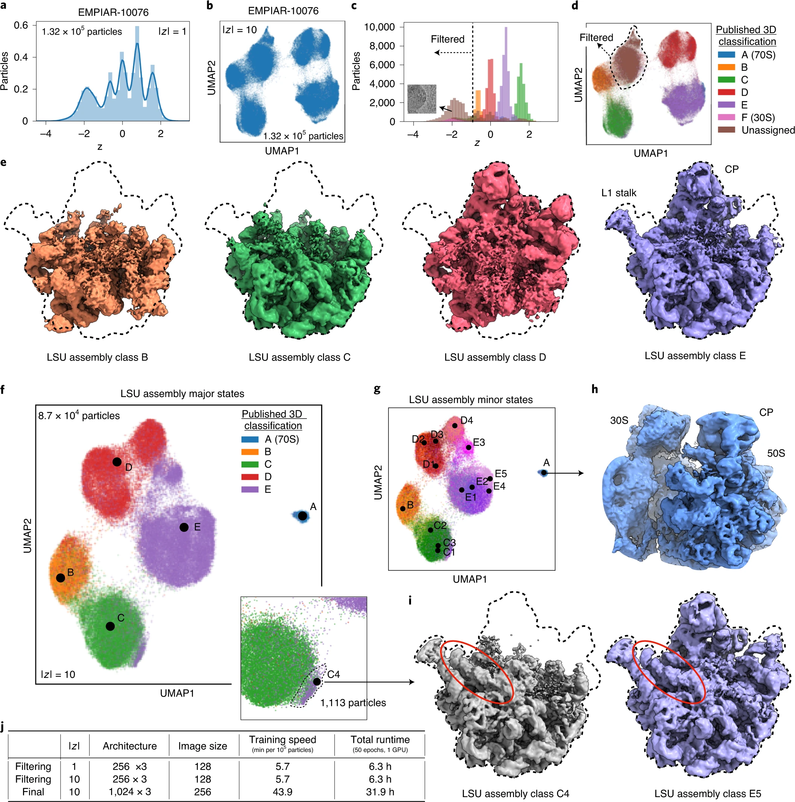 Figure 5 from Zhong et al 2021.
For an abbreviated overview of the steps for running cryoDRGN, see the README on the github page: https://github.com/zhonge/cryodrgn
All pre-processed inputs that are generated in this tutorial (except particle images) are also located here: https://github.com/zhonge/cryodrgn_empiar
The final trained networks and density maps are deposited here: https://zenodo.org/record/4355284.
For compute requirements and installation instructions, see cryoDRGN installation with anaconda.
1) Obtain the dataset
Download EMPIAR-10076 (~51GB) from https://www.ebi.ac.uk/pdbe/emdb/empiar/entry/10076/
You can download it directly from the browser, or from the command line using Aspera Connect (More info here)
$ ascp -QT -l 200M -P33001 -i ~/.aspera/connect/etc/asperaweb_id_dsa.openssh [emp_ext3@hx-fasp-1.ebi.ac.uk](mailto:emp_ext3@hx-fasp-1.ebi.ac.uk):/10076 .
This dataset contains 131,899 extracted particles with box size of 320 and pixel size of 1.31 A/pix.
 Screenshot from the EMPIAR entry
Screenshot from the EMPIAR entryThe particle images are in the file
L17Combine_weight_local.mrc. There is a typo in the file extension, so rename this file with the.mrcsextension.$ mv L17Combine_weight_local.mrc L17Combine_weight_local.mrcs
The CTF parameters for each particle are in the metadata file,
Parameters.star. We will extract the CTF parameters from this file later in Step 3.$ head Parameters.star -n 20data_ loop_ _rlnImageName #1 _rlnMicrographName #2 _rlnDefocusU #3 _rlnDefocusV #4 _rlnDefocusAngle #5 _rlnVoltage #6 _rlnSphericalAberration #7 _rlnAmplitudeContrast #8 _rlnMagnification #9 _rlnDetectorPixelSize #10 1@L17Combine_weight_local.mrcs 1 15301.1 14916.4 5.28 300 2.7 0.07 38168 5 2@L17Combine_weight_local.mrcs 2 15303.0 14918.4 5.28 300 2.7 0.07 38168 5 3@L17Combine_weight_local.mrcs 3 15150.7 14766.0 5.28 300 2.7 0.07 38168 5 4@L17Combine_weight_local.mrcs 4 15181.9 14797.3 5.28 300 2.7 0.07 38168 5 5@L17Combine_weight_local.mrcs 5 15366.8 14982.2 5.28 300 2.7 0.07 38168 5 6@L17Combine_weight_local.mrcs 6 15305.0 14920.3 5.28 300 2.7 0.07 38168 5 7@L17Combine_weight_local.mrcs 7 15177.4 14792.7 5.28 300 2.7 0.07 38168 5
Poses (i.e. particle alignments) are not present in the deposited data, so we will next run a consensus reconstruction.
2) Consensus reconstruction (optional)
Perform a C1 homogeneous refinement in your favorite cryo-EM software package. We will be using the poses from this “consensus reconstruction”.
To skip this step, download the poses from https://github.com/zhonge/cryodrgn_empiar/blob/main/empiar10076/inputs/cryosparc_P4_J33_004_particles.cs
A detailed walkthrough of this process is out of the scope of this guide, but we will briefly summarize the steps we used in cryoSPARC v2.4.
In cryoSPARC, 1) import the particles, 2) run an ab initio reconstruction job, then 3) run a homogeneous refinement job, all with default parameters.
For step (1), note that the data-sign of EMPIAR-10076 is flipped from most cryo-EM datasets (i.e. dark-on-light particles), so you will need to toggle the data sign when importing the particles.
Final result of refinement:
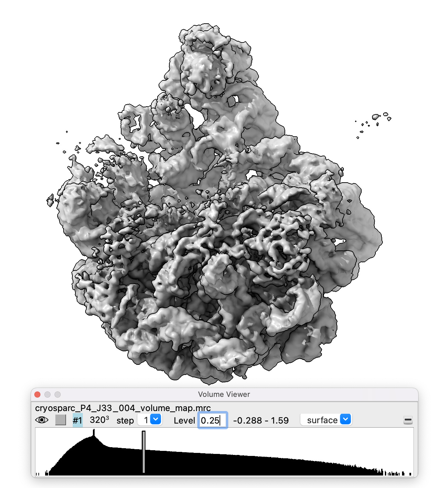 Note the partial occupancy of the mature assembly state elements (e.g. the shoulders of the ribosome); Also, note that the handedness of the reconstructed density map is flipped (50% chance from ab initio step). We will flip the output density maps from cryoDRGN later on in this tutorial.
 High resolution features are a good sign that the poses are accurate, even if other regions are less resolved due to heterogeneity.
High resolution features are a good sign that the poses are accurate, even if other regions are less resolved due to heterogeneity.

 CryoSPARC’s metadata file (a .cs file) that contains particle poses and CTF parameters can be downloaded from the web interface as the “alignments3D” output or found in the job directory in the filesystem where cryoSPARC is running.
CryoSPARC’s metadata file (a .cs file) that contains particle poses and CTF parameters can be downloaded from the web interface as the “alignments3D” output or found in the job directory in the filesystem where cryoSPARC is running.
3) Preprocess inputs
In this step, we will first extract poses (Step 3.1), then extract CTF parameters (Step 3.2), then downsample our images (Step 3.3).
Pose and CTF parameters are stored in various formats depending on the upstream processing software. CryoDRGN contains scripts to convert this information to a .pkl file format.
What are
.pklfiles?A pickle is a python module/format that allows you to serialize most python data objects to disk and re-load without any type conversion or file parsing. You can view any .pkl object using the cryoDRGN API :
from cryodrgn import utils z = utils.load_pkl('z.pkl') utils.save_pkl(z, 'z.copy.pkl')
3.1) Convert poses to cryoDRGN format
CryoDRGN has two executables for parsing pose information (i.e. particle alignments) from either a cryoSPARC
.csfile or a RELION.starfile.cryodrgn parse_pose_star -h(cryodrgn) $ cryodrgn parse_pose_star -h usage: cryodrgn parse_pose_star [-h] -o PKL [-D D] [--Apix APIX] input Parse image poses from RELION .star file positional arguments: input RELION .star file optional arguments: -h, --help show this help message and exit -o PKL Output pose.pkl Optionally provide missing image parameters: -D D Box size of reconstruction (pixels) --Apix APIX Pixel size (A); Required if translations are specified in Angstroms
-Dshould be set to the box size of the refinementNote: the flag
--relion31and the argument--Apix X.XXare required if the .star file from RELION version 3.1 or later (e.g. if the .star file contains thedata_opticsgroup). The pixel size should be the pixel size of the refinement.
cryodrgn parse_pose_csparc -h(cryodrgn) $ cryodrgn parse_pose_csparc -h usage: cryodrgn parse_pose_csparc [-h] [--abinit] [--hetrefine] -D D -o PKL input Parse image poses from a cryoSPARC .cs metafile positional arguments: input Cryosparc .cs file optional arguments: -h, --help show this help message and exit --abinit Flag if results are from ab-initio reconstruction --hetrefine Flag if results are from a heterogeneous refinements (default: homogeneous refinement) -D D Box size of reconstruction (pixels) -o PKL Output pose.pkl
For this tutorial, we will use
cryodrgn parse_pose_csparcto extract poses from the cryoSPARC refinement outputcryosparc_P4_J33_004_particles.csfrom Step 2.Example command and output:
$ cryodrgn parse_pose_csparc cryosparc_P4_J33_004_particles.cs -D 320 -o poses.pkl(cryodrgn) [Wed Feb 03 17:12 het] cryodrgn parse_pose_csparc empiar10076/P4/J33/cryosparc_P4_J33_004_particles.cs -D 320 -o poses.pkl 0 uid 3300296402854382810 1 blob/path b'J3/imported/L17Combine_weight_local.mrcs' 2 blob/idx 0 3 blob/shape [320 320] 4 blob/psize_A 1.31 5 blob/sign 1.0 6 ctf/type b'imported' 7 ctf/accel_kv 300.0 8 ctf/cs_mm 2.7 9 ctf/amp_contrast 0.07 10 ctf/df1_A 15301.1 11 ctf/df2_A 14916.4 12 ctf/df_angle_rad 0.092153385 13 ctf/phase_shift_rad 0.0 14 ctf/scale 1.0 15 ctf/scale_const 0.0 16 ctf/cross_corr_ctffind4 0.0 17 ctf/ctf_fit_to_A 0.0 18 ctf/fig_of_merit_gctf 0.0 19 prepare/float_value 0.0 20 alignments3D/split 1 21 alignments3D/shift [2.75 7.85] 22 alignments3D/pose [ 2.1353014 -1.3428906 -0.8660417] 23 alignments3D/psize_A 1.31 24 alignments3D/error 25082.113 25 alignments3D/error_min 25068.746 26 alignments3D/resid_pow 25082.113 27 alignments3D/slice_pow 133.63882 28 alignments3D/image_pow 25300.285 29 alignments3D/cross_cor 351.81055 30 alignments3D/alpha 1.3162737 31 alignments3D/weight 0.0 32 alignments3D/pose_ess 0.0 33 alignments3D/shift_ess 0.0 34 alignments3D/class_posterior 1.0 35 alignments3D/class 0 36 alignments3D/class_ess 1.0 2021-02-03 17:13:12 Extracting rotations from alignments3D/pose 2021-02-03 17:13:12 Transposing rotation matrix 2021-02-03 17:13:13 (131899, 3, 3) 2021-02-03 17:13:13 Extracting translations from alignments3D/shift 2021-02-03 17:13:13 (131899, 2) 2021-02-03 17:13:13 Writing /red/zhonge/cryoem/vae3d/00_data/empiar10076/het/poses.pkl
Note:
-Dshould be set to the box size of the refinement, which was 320 in this case
3.2) Convert CTF parameters to cryoDRGN format
CryoDRGN has two executables for parsing CTF information from either a cryoSPARC
.csfile or a RELION.starfile.cryodrgn parse_ctf_star -h(cryodrgn) $ cryodrgn parse_ctf_star -h usage: cryodrgn parse_ctf_star [-h] -o O [--png PNG] [-D D] [--Apix APIX] [--kv KV] [--cs CS] [-w W] [--ps PS] star Parse CTF parameters from a RELION .star file positional arguments: star Input optional arguments: -h, --help show this help message and exit -o O Output pkl of CTF parameters --png PNG Optionally plot the CTF Optionally provide missing image parameters: -D D Image size in pixels --Apix APIX Angstroms per pixel --kv KV Accelerating voltage (kV) --cs CS Spherical abberation (mm) -w W Amplitude contrast ratio --ps PS Phase shift (deg)
cryodrgn parse_ctf_csparc -h(cryodrgn) $ cryodrgn parse_ctf_csparc -h usage: cryodrgn parse_ctf_csparc [-h] -o O [--png PNG] [-D D] [--Apix APIX] cs Parse CTF parameters from a cryoSPARC particles.cs file positional arguments: cs Input cryosparc particles.cs file optional arguments: -h, --help show this help message and exit -o O Output pkl of CTF parameters --png PNG Optionally plot the CTF Optionally provide missing image parameters: -D D Image size in pixels --Apix APIX Angstroms per pixel
We can extract the CTF parameters from the deposited Parameters.star file:
Example command:
$ cryodrgn parse_ctf_star Parameters.star --Apix 1.31 -D 320 -o ctf.pkl --ps 0Example output
(cryodrgn) [Wed Feb 03 17:02 empiar10076] cryodrgn parse_ctf_star Parameters.star --Apix 1.31 -D 320 -o ctf.pkl --ps 0 2021-02-03 17:02:33 131899 particles 2021-02-03 17:02:33 Overriding phase shift with 0.0 2021-02-03 17:02:33 CTF parameters for first particle: 2021-02-03 17:02:33 Image size (pix) : 320 2021-02-03 17:02:33 A/pix : 1.31 2021-02-03 17:02:33 DefocusU (A) : 15301.1 2021-02-03 17:02:33 DefocusV (A) : 14916.4 2021-02-03 17:02:33 Dfang (deg) : 5.28 2021-02-03 17:02:33 voltage (kV) : 300.0 2021-02-03 17:02:33 cs (mm) : 2.7 2021-02-03 17:02:33 w : 0.07 2021-02-03 17:02:33 Phase shift (deg) : 0.0 2021-02-03 17:02:33 Saving /red/sparky/data/cryosparc/l17_davis_cell/raw_stack/ctf.pkl
The pixel size (
--Apix 1.31), image size (-D 320), and phase shift (--ps 0) are provided separately since they are not present in the .star file.
This metadata is also present in the cryoSPARC refinement .cs file. Below is an example usage of
cryodrgn parse_ctf_csparcto extract the CTF information from thecryosparc_P4_J33_004_particles.csfile:Example command:
$ cryodrgn parse_ctf_csparc cryosparc_P4_J33_004_particles.cs -o ctf.pklExample output
(cryodrgn) [Wed Feb 03 17:13 het] cryodrgn parse_ctf_csparc empiar10076/P4/J33/cryosparc_P4_J33_004_particles.cs -o ctf.pkl 2021-02-03 17:16:52 131899 particles 2021-02-03 17:16:52 Image size (pix) : 320 2021-02-03 17:16:52 A/pix : 1.309999942779541 2021-02-03 17:16:52 DefocusU (A) : 15301.099609375 2021-02-03 17:16:52 DefocusV (A) : 14916.400390625 2021-02-03 17:16:52 Dfang (deg) : 5.280000044476548 2021-02-03 17:16:52 voltage (kV) : 300.0 2021-02-03 17:16:52 cs (mm) : 2.700000047683716 2021-02-03 17:16:52 w : 0.07000000029802322 2021-02-03 17:16:52 Phase shift (deg) : 0.0 2021-02-03 17:16:52 Saving /red/zhonge/cryoem/vae3d/00_data/empiar10076/het/ctf.pkl
3.3) Downsample images
CryoDRGN training time is highly dependent on the image size (See Fig. 2E in Zhong et al.). We will downsample images to an image size of D=128 (where D is the image dimension in pixels, i.e. a 128x128 image) using cryodrgn downsample. Later on, we will train a higher resolution model using larger images (D=256).
Because of the tradeoffs between training time and representation capacity of the neural networks, we recommend training on images with a maximum of D=256. In general, to optimize training time, we encourage using the smallest possible image size given the desired/expected resolution of the final density maps and their motions. Here, using an image size of (256x256) corresponds to a pixel size of 1.31*320/256 = 1.6375 A/pix and a Nyquist resolution of 3.275 A, which is still below the resolutions of the published density maps (~4-5 A).
cryodrgn downsample -h(cryodrgn) $ cryodrgn downsample -h usage: cryodrgn downsample [-h] -D D -o MRCS [-b B] [--is-vol] [--chunk CHUNK] [--datadir DATADIR] [--max-threads MAX_THREADS] mrcs Downsample an image stack or volume by clipping fourier frequencies positional arguments: mrcs Input particles or volume (.mrc, .mrcs, .star, or .txt) optional arguments: -h, --help show this help message and exit -D D New box size in pixels, must be even -o MRCS Output projection stack (.mrcs) -b B Batch size for processing images (default: 5000) --is-vol Flag if input .mrc is a volume --chunk CHUNK Chunksize (in # of images) to split particle stack when saving --datadir DATADIR Optionally provide path to input .mrcs if loading from a .star or .cs file --max-threads MAX_THREADS Maximum number of CPU cores for parallelization (default: 16)
Downsample to D=256
First downsample our input file
L17Combine_weight_local.mrcsto an image size of D=256, saved as the output fileparticles.256.mrcs.Example command:
(cryodrgn) $ cryodrgn downsample L17Combine_weight_local.mrcs -D 256 -o particles.256.mrcs --chunk 50000
Use the
--chunk 50000flag to chunk the output into separate .mrcs containing 50k images each to avoid out-of-memory errors when saving out a large particle stack. Now, instead of a single output file, downsampled images will be stored in three separate .mrcs files (particles.256.0.mrcs,particles.256.1.mrcs, andparticles.256.2.mrcs), the first two containing 50k images, and the third with the remaining 31,899 images, and a text file,particles.256.txtlisting the three .mrcs files.Note: Chunked .mrcs files that are listed in a .txt file can contain either absolute paths or relative paths. By default the .txt file will only contain the file names (therefore it must remain in the same directory as the .mrcs).
Downsample to D=128
Next downsample our D=256 particles to D=128. Example command:
(cryodrgn) $ $ cryodrgn downsample particles.256.txt -D 128 -o particles.128.mrcs
The downsampled image stack will be 8.1GB
Note: You can also downsample from the original particles; it is faster (and equivalent) to do so from the smaller D=256 images.
Additional usage notes
cryodrgn downsamplecan also be used to downsample volumes using the--is-volargument.The input format to specify the particle stack may also be a
.starfile or a.csfile.If the paths to the .mrcs particles given by the .star/.cs file are broken, you can overwrite them using the argument
--datadir [PATH TO DIRECTORY WITH .MRCS]. In some cases, the--datadirpath should point to the project directory in order to complete relative file paths given in the .star/.cs file.
4) CryoDRGN training
When the input image stack (.mrcs), image poses (.pkl), and CTF parameters (.pkl) have been prepared, a cryoDRGN model can be trained with the following executable:
cryodrgn train_vae -h(cryodrgn) $ cryodrgn train_vae -h usage: cryodrgn train_vae [-h] -o OUTDIR --zdim ZDIM --poses POSES [--ctf pkl] [--load WEIGHTS.PKL] [--checkpoint CHECKPOINT] [--log-interval LOG_INTERVAL] [-v] [--seed SEED] [--ind PKL] [--uninvert-data] [--no-window] [--window-r WINDOW_R] [--datadir DATADIR] [--lazy] [--preprocessed] [--max-threads MAX_THREADS] [--tilt TILT] [--tilt-deg TILT_DEG] [-n NUM_EPOCHS] [-b BATCH_SIZE] [--wd WD] [--lr LR] [--beta BETA] [--beta-control BETA_CONTROL] [--norm NORM NORM] [--amp] [--multigpu] [--do-pose-sgd] [--pretrain PRETRAIN] [--emb-type {s2s2,quat}] [--pose-lr POSE_LR] [--enc-layers QLAYERS] [--enc-dim QDIM] [--encode-mode {conv,resid,mlp,tilt}] [--enc-mask ENC_MASK] [--use-real] [--dec-layers PLAYERS] [--dec-dim PDIM] [--pe-type {geom_ft,geom_full,geom_lowf,geom_nohighf,linear_lowf,gaussian,none}] [--feat-sigma FEAT_SIGMA] [--pe-dim PE_DIM] [--domain {hartley,fourier}] [--activation {relu,leaky_relu}] particles Train a VAE for heterogeneous reconstruction with known pose positional arguments: particles Input particles (.mrcs, .star, .cs, or .txt) optional arguments: -h, --help show this help message and exit -o OUTDIR, --outdir OUTDIR Output directory to save model --zdim ZDIM Dimension of latent variable --poses POSES Image poses (.pkl) --ctf pkl CTF parameters (.pkl) --load WEIGHTS.PKL Initialize training from a checkpoint --checkpoint CHECKPOINT Checkpointing interval in N_EPOCHS (default: 1) --log-interval LOG_INTERVAL Logging interval in N_IMGS (default: 1000) -v, --verbose Increaes verbosity --seed SEED Random seed Dataset loading: --ind PKL Filter particle stack by these indices --uninvert-data Do not invert data sign --no-window Turn off real space windowing of dataset --window-r WINDOW_R Windowing radius (default: 0.85) --datadir DATADIR Path prefix to particle stack if loading relative paths from a .star or .cs file --lazy Lazy loading if full dataset is too large to fit in memory (Should copy dataset to SSD) --preprocessed Skip preprocessing steps if input data is from cryodrgn preprocess_mrcs --max-threads MAX_THREADS Maximum number of CPU cores for FFT parallelization (default: 16) Tilt series: --tilt TILT Particles (.mrcs) --tilt-deg TILT_DEG X-axis tilt offset in degrees (default: 45) Training parameters: -n NUM_EPOCHS, --num-epochs NUM_EPOCHS Number of training epochs (default: 20) -b BATCH_SIZE, --batch-size BATCH_SIZE Minibatch size (default: 8) --wd WD Weight decay in Adam optimizer (default: 0) --lr LR Learning rate in Adam optimizer (default: 0.0001) --beta BETA Choice of beta schedule or a constant for KLD weight (default: 1/zdim) --beta-control BETA_CONTROL KL-Controlled VAE gamma. Beta is KL target. (default: None) --norm NORM NORM Data normalization as shift, 1/scale (default: 0, std of dataset) --amp Accelerate training speed with mixed-precision training --multigpu Parallelize training across all detected GPUs Pose SGD: --do-pose-sgd Refine poses with gradient descent --pretrain PRETRAIN Number of epochs with fixed poses before pose SGD (default: 1) --emb-type {s2s2,quat} SO(3) embedding type for pose SGD (default: quat) --pose-lr POSE_LR Learning rate for pose optimizer (default: 0.0003) Encoder Network: --enc-layers QLAYERS Number of hidden layers (default: 3) --enc-dim QDIM Number of nodes in hidden layers (default: 256) --encode-mode {conv,resid,mlp,tilt} Type of encoder network (default: resid) --enc-mask ENC_MASK Circular mask of image for encoder (default: D/2; -1 for no mask) --use-real Use real space image for encoder (for convolutional encoder) Decoder Network: --dec-layers PLAYERS Number of hidden layers (default: 3) --dec-dim PDIM Number of nodes in hidden layers (default: 256) --pe-type {geom_ft,geom_full,geom_lowf,geom_nohighf,linear_lowf,gaussian,none} Type of positional encoding (default: geom_lowf) --feat-sigma FEAT_SIGMA Scale for random Gaussian features --pe-dim PE_DIM Num features in positional encoding (default: image D) --domain {hartley,fourier} Decoder representation domain (default: fourier) --activation {relu,leaky_relu} Activation (default: relu)
Many of the parameters of this script have sensible defaults. The required arguments are:
an input image stack (
.mrcsor other listed file types)--poses, image poses (.pkl) that correspond to the input images (see Step 3.1)--ctf, ctf parameters (.pkl), unless phase-flipped images are used (see Step 3.2)--zdim, the dimension of the latent variable-o, a clean output directory for storing results
Additional parameters which are typically set include:
-n, Number of epochs to train--uninvert-data, A flag to invert the image sign if particles are dark on light (i.e. negative stain format)Neural network architecture settings with
--enc-layers,--enc-dim,--dec-layers,--dec-dim--multigputo enable parallelized training across multiple GPUs (fast!)
General recommended workflow**
First, train on lower resolution images (e.g. D=128) using the default architecture (fast) as an initial pass to sanity check results and remove junk particles. (D=128, default 256x3 architecture)
After any particle filtering, then train a larger model with the
--enc-dim 1024and--dec-dim 1024arguments, which in theory can learn more heterogeneity. (D=128, large 1024x3 architecture)Finally, after validation, pose optimization, and any necessary particle filtering, then train on the full resolution image stack (up to D=256) with a large architecture. (D=256, large 1024x3 architecture)
In this tutorial we will walk through the commands and analysis for Step 1 and Step 3 in the above workflow. You can run step 2 on your own to see how the results compare.
CryoDRGN initial training
Run
cryodrgn train_vaeon the full particle stack of D=128 particles (1 GPU; 64GB memory requirement)Example command:
$ cryodrgn train_vae data/128/particles.128.mrcs \ --ctf data/ctf.pkl \ --poses data/poses.pkl \ --zdim 8 \ -n 50 \ --uninvert-data \ # NOTE: Use this flag only if particles are dark-on-light (negative stain format) -o tutorial/00_vae128 > tutorial_00.log
Inputs:
particles (.mrcs, .star, .txt, or .cs) format, here
data/128/particles.128.mrcs--ctfctf parameters in a cryodrgn .pkl file, heredata/ctf.pkl--posesposes in a cryodrgn .pkl file, heredata/poses.pkl
Arguments:
--zdim 8to specify the dimension of the latent variable (i.e. each particle will get assigned an 8-dimensional vector as its latent embedding)-n 50to specify 50 epochs of training (i.e. 50 iterations through the dataset)-o tutorial/00, a clean output directory (will get created if it does not already exist)Use the
--uninvert-dataflag to flip the data sign of the particles dataset (This flag is not needed for the majority of cryo-EM datasets)
Outputs:
Log
2021-02-03 17:46:01 /nobackup/users/zhonge/anaconda3/envs/cryodrgn4/bin/cryodrgn train_vae data/128/projections.128.mrcs --ctf data/ctf.new.pkl --poses data/pose.pkl --zdim 8 -n 50 -o tutorial/00 2021-02-03 17:46:01 Namespace(activation='relu', amp=False, batch_size=8, beta=None, beta_control=None, checkpoint=1, ctf='/nobackup/users/zhonge/cryodrgn/11_l17_ribo/data/ctf.new.pkl', datadir=None, do_pose_sgd=False, domain='fourier', emb_type='quat', enc_mask=None, encode_mode='resid', func=<function main at 0x2000ab052840>, ind=None, invert_data=True, lazy=False, load=None, log_interval=1000, lr=0.0001, multigpu=False, norm=None, num_epochs=50, outdir='/nobackup/users/zhonge/cryodrgn/11_l17_ribo/tutorial/00', particles='/nobackup/users/zhonge/cryodrgn/11_l17_ribo/data/128/projections.128.mrcs', pdim=256, pe_dim=None, pe_type='geom_lowf', players=3, pose_lr=0.0003, poses='/nobackup/users/zhonge/cryodrgn/11_l17_ribo/data/pose.pkl', pretrain=1, qdim=256, qlayers=3, relion31=False, seed=43266, tilt=None, tilt_deg=45, use_real=False, verbose=False, wd=0, window=True, zdim=8) 2021-02-03 17:46:01 Use cuda True 2021-02-03 17:46:09 Loaded 131899 128x128 images 2021-02-03 17:47:54 Normalized HT by 0 +/- 278.593719482421 2021-02-03 17:48:04 Loading ctf params from /nobackup/users/zhonge/cryodrgn/11_l17_ribo/data/ctf.new.pkl 2021-02-03 17:48:04 Image size (pix) : 128 2021-02-03 17:48:04 A/pix : 3.2750000953674316 2021-02-03 17:48:04 DefocusU (A) : 15301.099609375 2021-02-03 17:48:04 DefocusV (A) : 14916.400390625 2021-02-03 17:48:04 Dfang (deg) : 5.28000020980835 2021-02-03 17:48:04 voltage (kV) : 300.0 2021-02-03 17:48:04 cs (mm) : 2.700000047683716 2021-02-03 17:48:04 w : 0.07000000029802322 2021-02-03 17:48:04 Phase shift (deg) : 0.0 2021-02-03 17:48:04 Using circular lattice with radius 64 2021-02-03 17:48:05 HetOnlyVAE( (encoder): ResidLinearMLP( (main): Sequential( (0): Linear(in_features=12852, out_features=256, bias=True) (1): ReLU() (2): ResidLinear( (linear): Linear(in_features=256, out_features=256, bias=True) ) (3): ReLU() (4): ResidLinear( (linear): Linear(in_features=256, out_features=256, bias=True) ) (5): ReLU() (6): ResidLinear( (linear): Linear(in_features=256, out_features=256, bias=True) ) (7): ReLU() (8): Linear(in_features=256, out_features=16, bias=True) ) ) (decoder): FTPositionalDecoder( (decoder): ResidLinearMLP( (main): Sequential( (0): Linear(in_features=392, out_features=256, bias=True) (1): ReLU() (2): ResidLinear( (linear): Linear(in_features=256, out_features=256, bias=True) ) (3): ReLU() (4): ResidLinear( (linear): Linear(in_features=256, out_features=256, bias=True) ) (5): ReLU() (6): ResidLinear( (linear): Linear(in_features=256, out_features=256, bias=True) ) (7): ReLU() (8): Linear(in_features=256, out_features=2, bias=True) ) ) ) ) 2021-02-03 17:48:05 3790354 parameters in model 2021-02-03 17:48:11 # [Train Epoch: 1/50] [1000/131899 images] gen loss=1.044404, kld=2.817325, beta=0.125000, loss=1.044431 2021-02-03 17:48:14 # [Train Epoch: 1/50] [2000/131899 images] gen loss=1.039896, kld=7.318097, beta=0.125000, loss=1.039967 2021-02-03 17:48:17 # [Train Epoch: 1/50] [3000/131899 images] gen loss=1.010868, kld=8.658796, beta=0.125000, loss=1.010953 . . . 2021-02-04 00:39:24 # [Train Epoch: 50/50] [126000/131899 images] gen loss=0.989016, kld=26.381516, beta=0.125000, loss=0.989272 2021-02-04 00:39:28 # [Train Epoch: 50/50] [127000/131899 images] gen loss=0.948055, kld=24.869091, beta=0.125000, loss=0.948297 2021-02-04 00:39:31 # [Train Epoch: 50/50] [128000/131899 images] gen loss=1.017258, kld=25.462738, beta=0.125000, loss=1.017505 2021-02-04 00:39:35 # [Train Epoch: 50/50] [129000/131899 images] gen loss=1.033358, kld=30.238625, beta=0.125000, loss=1.033653 2021-02-04 00:39:38 # [Train Epoch: 50/50] [130000/131899 images] gen loss=0.966860, kld=24.983553, beta=0.125000, loss=0.967103 2021-02-04 00:39:41 # [Train Epoch: 50/50] [131000/131899 images] gen loss=0.982898, kld=25.034485, beta=0.125000, loss=0.983141 2021-02-04 00:39:44 # =====> Epoch: 50 Average gen loss = 0.998177, KLD = 26.589939, total loss = 0.998435; Finished in 0:07:27.660706 2021-02-04 00:41:18 Finsihed in 6:55:17.244481 (0:08:18.344890 per epoch)
The training will take ~7.5 min/epoch on a V100 GPU, requiring ~7 hours total. The output directory will contain the following files:
config.yamla configuration file containing all inputs and settings for the jobweights.pklthe final neural network weights (and intermediate checkpointsweights.n.pkl)z.pklthe final per-particle latent embeddings (and embeddings from intermediate epochsz.n.pkl)
Note you can use
cryodrgn analyzeto analyze intermediate epochs during training.
Extending or restarting from a checkpoint
If the run was interrupted before it reached the desired number of epochs or you would like to train longer, a training job can be extended with the --load argument. For example, to resume training that was interrupted at epoch 24:
# Use the same command with extra --load argument
$ cryodrgn train_vae data/128/particles.128.mrcs \
--ctf data/ctf.pkl \
--poses data/poses.pkl \
--zdim 8 \
-n 50 \
--uninvert-data \ # NOTE: Use this flag only if particles are dark-on-light (negative stain format)
--load tutorial/00_vae128/weights.24.pkl \ # 0-based indexing
-o tutorial/00_vae128 >> tutorial.00.log
You can also use --load latest, and cryodrgn will try to detect the latest set of model weights in the specified workdir.
5) cryoDRGN analysis
Once the model has finished training, use the cryodrgn analyze command to visualize the latent space, generate density maps, and generate template Jupyter notebooks for further interactive filtering, visualization, and analysis.
$ cryodrgn analyze -h(cryodrgn) $ cryodrgn analyze -h usage: cryodrgn analyze [-h] [--device DEVICE] [-o OUTDIR] [--skip-vol] [--skip-umap] [--Apix APIX] [--flip] [-d DOWNSAMPLE] [--pc PC] [--ksample KSAMPLE] workdir epoch Visualize latent space and generate volumes positional arguments: workdir Directory with cryoDRGN results epoch Epoch number N to analyze (0-based indexing, corresponding to z.N.pkl, weights.N.pkl) optional arguments: -h, --help show this help message and exit --device DEVICE Optionally specify CUDA device -o OUTDIR, --outdir OUTDIR Output directory for analysis results (default: [workdir]/analyze.[epoch]) --skip-vol Skip generation of volumes --skip-umap Skip running UMAP Extra arguments for volume generation: --Apix APIX Pixel size to add to .mrc header (default: 1 A/pix) --flip Flip handedness of output volume -d DOWNSAMPLE, --downsample DOWNSAMPLE Downsample volumes to this box size (pixels) --pc PC Number of principal component traversals to generate (default: 2) --ksample KSAMPLE Number of kmeans samples to generate (default: 20) --vol-start-index VOL_START_INDEX Default value of start index for volume generation (default: 0)
This script runs a series of standard analyses that will be further described below:
PCA and UMAP visualizations of the particle latent embeddings
Generation of volumes from the latent embeddings at kmeans cluster centers
Generation of trajectories along the first and second principal components of the latent embeddings
Generation of a template jupyter notebook that may be used for further interactive analyses, visualization, and volume generation
(New in v0.3.2) Generation of a template jupyter notebook that may be used for particle filtering
(New in v2.2.0) Generation of a template jupyter notebook for adjusting any of the output figures
Example command to run cryodrgn analyze on the directory tutorial/00_vae128 and the trained weights from epoch 49 (0-based indexing) (1 GPU; ~5 min)
# Usage: cryodrgn analyze [workdir] [epoch]
$ cryodrgn analyze tutorial/00_vae128 49 --flip --Apix 3.275
Example output log
(cryodrgn4) [Thu Feb 04 02:57 00] cryodrgn analyze . 49 2021-02-04 02:57:18 Saving results to /nobackup/users/zhonge/cryodrgn/11_l17_ribo/tutorial/00/analyze.49 2021-02-04 02:57:18 Perfoming principal component analysis... 2021-02-04 02:57:18 Explained variance ratio: 2021-02-04 02:57:18 [0.22400902 0.2087886 0.16459696 0.10960732 0.09572161 0.07636773 0.06840914 0.05249962] 2021-02-04 02:57:18 Generating volumes... 2021-02-04 02:57:18 Running command: cryodrgn eval_vol /nobackup/users/zhonge/cryodrgn/11_l17_ribo/tutorial/00/weights.49.pkl --config /nobackup/users/zhonge/cryodrgn/11_l17_ribo/tutorial/00/config.yaml --zfile /nobackup/users/zhonge/cryodrgn/11_l17_ribo/tutorial/00/analyze.49/pc1/z_values.txt -o /nobackup/users/zhonge/cryodrgn/11_l17_ribo/tutorial/00/analyze.49/pc1 --Apix 1 2021-02-04 02:57:20 Use cuda True 2021-02-04 02:57:20 Namespace(Apix=1.0, D=None, activation='relu', config='/nobackup/users/zhonge/cryodrgn/11_l17_ribo/tutorial/00/config.yaml', domain=None, downsample=None, enc_mask=None, encode_mode=None, flip=False, func=<function main at 0x7ffed8e3fe18>, l_extent=None, n=10, norm=None, o='/nobackup/users/zhonge/cryodrgn/11_l17_ribo/tutorial/00/analyze.49/pc1', pdim=None, pe_dim=None, pe_type=None, players=None, prefix='vol_', qdim=None, qlayers=None, verbose=False, weights='/nobackup/users/zhonge/cryodrgn/11_l17_ribo/tutorial/00/weights.49.pkl', z=None, z_end=None, z_start=None, zdim=None, zfile='/nobackup/users/zhonge/cryodrgn/11_l17_ribo/tutorial/00/analyze.49/pc1/z_values.txt') 2021-02-04 02:57:20 Loaded configuration: {'dataset_args': {'ctf': '/nobackup/users/zhonge/cryodrgn/11_l17_ribo/data/ctf.new.pkl', 'datadir': None, 'do_pose_sgd': False, 'ind': None, 'invert_data': True, 'keepreal': False, 'norm': [0, 278.59372], 'particles': '/nobackup/users/zhonge/cryodrgn/11_l17_ribo/data/128/projections.128.mrcs', 'poses': '/nobackup/users/zhonge/cryodrgn/11_l17_ribo/data/pose.pkl', 'window': True}, 'lattice_args': {'D': 129, 'extent': 0.5, 'ignore_DC': True}, 'model_args': {'activation': 'relu', 'domain': 'fourier', 'enc_mask': 64, 'encode_mode': 'resid', 'pdim': 256, 'pe_dim': None, 'pe_type': 'geom_lowf', 'players': 3, 'qdim': 256, 'qlayers': 3, 'zdim': 8}, 'seed': 43266} 2021-02-04 02:57:29 Using circular lattice with radius 64 2021-02-04 02:57:30 Generating 10 volumes 2021-02-04 02:57:30 [-0.46911267 -0.69718513 -0.0095188 -2.78874987 0.1540933 0.16372231 0.31355665 2.17943362] 2021-02-04 02:57:32 [-0.39820911 -0.56545639 -0.01828557 -2.24070284 0.12997294 0.12582034 0.25060696 1.75664491] 2021-02-04 02:57:33 [-0.32730555 -0.43372764 -0.02705235 -1.69265581 0.10585258 0.08791838 0.18765726 1.33385621] 2021-02-04 02:57:34 [-0.25640199 -0.3019989 -0.03581912 -1.14460877 0.08173222 0.05001641 0.12470757 0.91106751] 2021-02-04 02:57:35 [-0.18549843 -0.17027016 -0.0445859 -0.59656174 0.05761186 0.01211444 0.06175788 0.48827881] 2021-02-04 02:57:36 [-0.11459487 -0.03854141 -0.05335267 -0.04851471 0.0334915 -0.02578752 -0.00119181 0.06549011] 2021-02-04 02:57:36 [-0.04369131 0.09318733 -0.06211945 0.49953232 0.00937114 -0.06368949 -0.0641415 -0.35729859] 2021-02-04 02:57:37 [ 0.02721225 0.22491608 -0.07088622 1.04757935 -0.01474922 -0.10159146 -0.12709119 -0.78008729] 2021-02-04 02:57:38 [ 0.09811581 0.35664482 -0.079653 1.59562638 -0.03886958 -0.13949343 -0.19004089 -1.20287599] 2021-02-04 02:57:39 [ 0.16901937 0.48837357 -0.08841977 2.14367342 -0.06298993 -0.17739539 -0.25299058 -1.62566469] 2021-02-04 02:57:40 Finsihed in 0:00:19.785367 2021-02-04 02:57:40 Running command: cryodrgn eval_vol /nobackup/users/zhonge/cryodrgn/11_l17_ribo/tutorial/00/weights.49.pkl --config /nobackup/users/zhonge/cryodrgn/11_l17_ribo/tutorial/00/config.yaml --zfile /nobackup/users/zhonge/cryodrgn/11_l17_ribo/tutorial/00/analyze.49/pc2/z_values.txt -o /nobackup/users/zhonge/cryodrgn/11_l17_ribo/tutorial/00/analyze.49/pc2 --Apix 1 2021-02-04 02:57:42 Use cuda True 2021-02-04 02:57:42 Namespace(Apix=1.0, D=None, activation='relu', config='/nobackup/users/zhonge/cryodrgn/11_l17_ribo/tutorial/00/config.yaml', domain=None, downsample=None, enc_mask=None, encode_mode=None, flip=False, func=<function main at 0x7ffea04efe18>, l_extent=None, n=10, norm=None, o='/nobackup/users/zhonge/cryodrgn/11_l17_ribo/tutorial/00/analyze.49/pc2', pdim=None, pe_dim=None, pe_type=None, players=None, prefix='vol_', qdim=None, qlayers=None, verbose=False, weights='/nobackup/users/zhonge/cryodrgn/11_l17_ribo/tutorial/00/weights.49.pkl', z=None, z_end=None, z_start=None, zdim=None, zfile='/nobackup/users/zhonge/cryodrgn/11_l17_ribo/tutorial/00/analyze.49/pc2/z_values.txt') 2021-02-04 02:57:42 Loaded configuration: {'dataset_args': {'ctf': '/nobackup/users/zhonge/cryodrgn/11_l17_ribo/data/ctf.new.pkl', 'datadir': None, 'do_pose_sgd': False, 'ind': None, 'invert_data': True, 'keepreal': False, 'norm': [0, 278.59372], 'particles': '/nobackup/users/zhonge/cryodrgn/11_l17_ribo/data/128/projections.128.mrcs', 'poses': '/nobackup/users/zhonge/cryodrgn/11_l17_ribo/data/pose.pkl', 'window': True}, 'lattice_args': {'D': 129, 'extent': 0.5, 'ignore_DC': True}, 'model_args': {'activation': 'relu', 'domain': 'fourier', 'enc_mask': 64, 'encode_mode': 'resid', 'pdim': 256, 'pe_dim': None, 'pe_type': 'geom_lowf', 'players': 3, 'qdim': 256, 'qlayers': 3, 'zdim': 8}, 'seed': 43266} 2021-02-04 02:57:44 Using circular lattice with radius 64 2021-02-04 02:57:44 Generating 10 volumes 2021-02-04 02:57:44 [ 1.294627 -0.24291033 -1.22768164 0.23142111 -0.33955064 0.78482312 -2.50019564 1.20387314] 2021-02-04 02:57:45 [ 0.99771195 -0.20620808 -0.98250969 0.14853748 -0.26071324 0.61755447 -1.97648029 0.98551235] 2021-02-04 02:57:46 [ 0.70079691 -0.16950582 -0.73733774 0.06565385 -0.18187584 0.45028583 -1.45276495 0.76715156] 2021-02-04 02:57:47 [ 0.40388187 -0.13280357 -0.49216579 -0.01722978 -0.10303843 0.28301718 -0.9290496 0.54879077] 2021-02-04 02:57:48 [ 0.10696682 -0.09610131 -0.24699384 -0.1001134 -0.02420103 0.11574853 -0.40533425 0.33042997] 2021-02-04 02:57:48 [-0.18994822 -0.05939906 -0.00182189 -0.18299703 0.05463638 -0.05152012 0.1183811 0.11206918] 2021-02-04 02:57:49 [-0.48686326 -0.02269681 0.24335006 -0.26588066 0.13347378 -0.21878876 0.64209644 -0.10629161] 2021-02-04 02:57:50 [-0.78377831 0.01400545 0.48852201 -0.34876429 0.21231118 -0.38605741 1.16581179 -0.3246524 ] 2021-02-04 02:57:51 [-1.08069335 0.0507077 0.73369396 -0.43164792 0.29114859 -0.55332606 1.68952714 -0.54301319] 2021-02-04 02:57:52 [-1.37760839 0.08740996 0.97886591 -0.51453155 0.36998599 -0.7205947 2.21324248 -0.76137398] 2021-02-04 02:57:53 Finsihed in 0:00:10.702840 2021-02-04 02:57:53 K-means clustering... 2021-02-04 02:58:00 Generating volumes... 2021-02-04 02:58:00 Running command: cryodrgn eval_vol /nobackup/users/zhonge/cryodrgn/11_l17_ribo/tutorial/00/weights.49.pkl --config /nobackup/users/zhonge/cryodrgn/11_l17_ribo/tutorial/00/config.yaml --zfile /nobackup/users/zhonge/cryodrgn/11_l17_ribo/tutorial/00/analyze.49/kmeans20/z_values.txt -o /nobackup/users/zhonge/cryodrgn/11_l17_ribo/tutorial/00/analyze.49/kmeans20 --Apix 1 2021-02-04 02:58:02 Use cuda True 2021-02-04 02:58:02 Namespace(Apix=1.0, D=None, activation='relu', config='/nobackup/users/zhonge/cryodrgn/11_l17_ribo/tutorial/00/config.yaml', domain=None, downsample=None, enc_mask=None, encode_mode=None, flip=False, func=<function main at 0x7ffeb2fded90>, l_extent=None, n=10, norm=None, o='/nobackup/users/zhonge/cryodrgn/11_l17_ribo/tutorial/00/analyze.49/kmeans20', pdim=None, pe_dim=None, pe_type=None, players=None, prefix='vol_', qdim=None, qlayers=None, verbose=False, weights='/nobackup/users/zhonge/cryodrgn/11_l17_ribo/tutorial/00/weights.49.pkl', z=None, z_end=None, z_start=None, zdim=None, zfile='/nobackup/users/zhonge/cryodrgn/11_l17_ribo/tutorial/00/analyze.49/kmeans20/z_values.txt') 2021-02-04 02:58:02 Loaded configuration: {'dataset_args': {'ctf': '/nobackup/users/zhonge/cryodrgn/11_l17_ribo/data/ctf.new.pkl', 'datadir': None, 'do_pose_sgd': False, 'ind': None, 'invert_data': True, 'keepreal': False, 'norm': [0, 278.59372], 'particles': '/nobackup/users/zhonge/cryodrgn/11_l17_ribo/data/128/projections.128.mrcs', 'poses': '/nobackup/users/zhonge/cryodrgn/11_l17_ribo/data/pose.pkl', 'window': True}, 'lattice_args': {'D': 129, 'extent': 0.5, 'ignore_DC': True}, 'model_args': {'activation': 'relu', 'domain': 'fourier', 'enc_mask': 64, 'encode_mode': 'resid', 'pdim': 256, 'pe_dim': None, 'pe_type': 'geom_lowf', 'players': 3, 'qdim': 256, 'qlayers': 3, 'zdim': 8}, 'seed': 43266} 2021-02-04 02:58:04 Using circular lattice with radius 64 2021-02-04 02:58:04 Generating 20 volumes 2021-02-04 02:58:04 [ 2.47612858 1.90699387 -6.04850197 5.43400908 0.27650252 -24.12995529 -2.3250308 3.7706964 ] 2021-02-04 02:58:05 [-0.38294414 0.05903612 -0.07340568 -2.14857912 -1.43606532 -6.48859549 -1.28178108 0.9746204 ] 2021-02-04 02:58:05 [ 0.75751173 -1.02667093 1.90755236 -3.46744156 -0.51795393 -0.53410876 -0.6747672 -0.07184201] 2021-02-04 02:58:06 [-0.39390403 -4.45507717 1.54359567 -3.08658767 -0.37659553 0.12258258 -0.59937257 -0.22234169] 2021-02-04 02:58:07 [ 1.00644302 -0.63465279 -1.0577668 1.89774811 -0.28295705 0.83203548 -2.69281244 0.79193765] 2021-02-04 02:58:08 [ 1.25866413 0.96147162 -1.38003922 -0.0860692 -0.73352259 0.40986091 -2.08615518 0.60404295] 2021-02-04 02:58:09 [ 1.66666162 -0.26700783 -0.10245889 -0.29272029 0.68260807 0.62163264 -0.88520497 0.98171395] 2021-02-04 02:58:09 [-0.57202214 0.37561724 0.12516868 1.5115962 -0.3613039 -0.3017866 -0.60656387 -1.45335865] 2021-02-04 02:58:10 [ 0.74015254 0.34087622 0.30410638 0.71546018 -0.03811092 -0.17879301 0.25628883 -1.22579646] 2021-02-04 02:58:11 [ 0.44719604 -0.2432248 -0.52932549 -0.70396465 0.50919217 0.10998529 2.3488977 0.93258661] 2021-02-04 02:58:12 [-1.04071832 0.60200369 0.23502171 0.22022174 0.9593488 -0.15067071 2.34484267 -1.02382338] 2021-02-04 02:58:12 [-0.94867486 -0.89667982 0.93049031 0.47582638 0.52237713 -0.64064002 2.15901017 -0.40877968] 2021-02-04 02:58:13 [ 1.14693427 0.93310452 -0.19505537 -2.90435362 -1.93226695 0.3056525 0.80431372 1.23579288] 2021-02-04 02:58:14 [-2.20564294 0.6484825 -1.06616759 -2.64037299 -2.2968111 -0.86852956 1.28031063 0.94097143] 2021-02-04 02:58:15 [-1.80046439 2.30461287 1.092592 -2.74578357 -1.52575612 -0.99183404 -0.01311122 -0.26105565] 2021-02-04 02:58:15 [-1.050125 -0.81217915 0.75083983 -1.61578703 -0.43990365 0.25753841 0.10831033 3.08369875] 2021-02-04 02:58:16 [ 0.02014027 -1.22502518 -0.98093748 -0.37346572 1.85765135 1.13682508 0.9183864 2.5960722 ] 2021-02-04 02:58:17 [-0.11215129 0.1362886 0.1612342 -3.04565883 1.92077279 0.20085585 -1.72337461 1.19097638] 2021-02-04 02:58:18 [-2.51964045 -0.48837739 0.40034276 -2.05232668 -1.27610278 -0.68975723 -2.2069602 0.2000891 ] 2021-02-04 02:58:18 [-3.26598477 -0.72640318 0.30290347 -2.19951153 0.87410563 -0.05870867 -0.48441201 0.65784246] 2021-02-04 02:58:19 Finsihed in 0:00:17.491466 2021-02-04 02:58:20 Running UMAP... 2021-02-04 03:02:20 Generating plots... 2021-02-04 03:02:38 Creating jupyter notebook... 2021-02-04 03:02:38 /nobackup/users/zhonge/cryodrgn/11_l17_ribo/tutorial/00/analyze.49/cryoDRGN_viz.ipynb 2021-02-04 03:02:38 Creating jupyter notebook... 2021-02-04 03:02:38 /nobackup/users/zhonge/cryodrgn/11_l17_ribo/tutorial/00/analyze.49/cryoDRGN_filtering.ipynb 2021-02-04 03:02:38 Finished in 0:05:19.831017
What’s in the analysis directory?
Once cryodrgn analyze finishes, there will be a new directory, analyze.49, within the job directory:
(cryodrgn4) $ ls tutorial/00_vae128/analyze.49 # path to analysis directory
cryoDRGN_filtering.ipynb kmeans20 pc2 umap.pkl z_pca_hexbin.png
cryoDRGN_viz.ipynb pc1 umap_hexbin.png umap.png z_pca.png
Visualization of the latent space
Because we trained a 8-dimensional latent variable model (--zdim 8), each particle image is associated with an 8-D vector embedding (saved in z.49.pkl ). cryodrgn analyze runs PCA (a linear dimensionality reduction technique) and UMAP (a nonlinear dimensionality technique) to visualize these latent embeddings. These images will be found in the analyze.49 directory:
PCA

z_pca.png
UMAP

z_pca_hexbin.png

umap.png

umap_hexbin.png
We can see there are 5 major clusters in the latent space similar to Figure 5A in Zhong et al. We will show how these align with the 4 major classes of the LSU ribosome + a fifth junk class, and how to remove the fifth junk class from the particle stack.
Sampled density maps
The analyze.49 directory will also contain a subdirectory kmeans20 with representative reconstructed density maps:
# contents of the directory
(cryodrgn) $ ls tutorial/00_vae128/analyze.49/kmeans20/
centers_ind.txt umap.png vol_003.mrc vol_007.mrc vol_011.mrc vol_015.mrc vol_019.mrc
centers.txt vol_000.mrc vol_004.mrc vol_008.mrc vol_012.mrc vol_016.mrc z_pca_hex.png
labels.pkl vol_001.mrc vol_005.mrc vol_009.mrc vol_013.mrc vol_017.mrc z_pca.png
umap_hex.png vol_002.mrc vol_006.mrc vol_010.mrc vol_014.mrc vol_018.mrc z_values.txt
cryodrgn analyze uses the k-means clustering algorithm to partition the latent space into k regions (by default k=20), and generate a density map from the center of each of these clusters. The goal is to provide an initial set of summary density maps to visually inspect, not to assign clusters.
Note: The number of volumes can be modified with the argument --ksample 50.
The directory will also contain PCA and UMAP visualizations with annotations of where the 20 density maps were generated from.

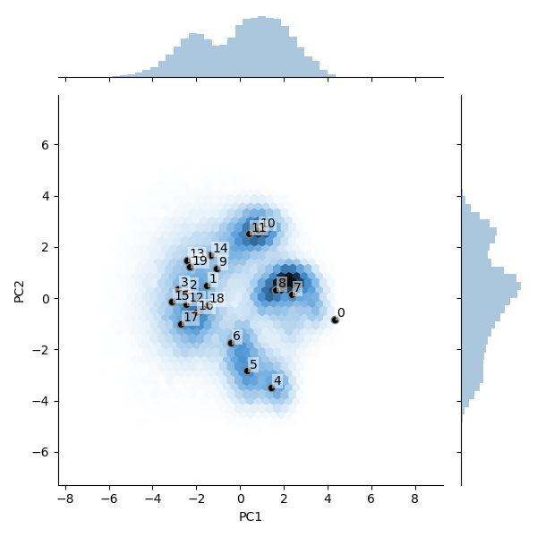


PC trajectories
There are two subdirectories in the analysis directory that will contain volumes generated along the first and second principal components (PC) of the latent space. By default, the volumes are generated at equally spaced points between the first and 99th percentile of the data distribution projected onto each principal component (e.g. Fig 6c of Zhong et al).
Note 1: The PC trajectories can give a sense of the variability in the structure, however, the principal components of cryoDRGN’s latent space are not principal components of the volumes due to the nonlinear nature of the decoder.
Note 2: Principal component trajectories can also produce nonphysical “motions”, e.g. if there is discrete variability in the structure.
Additional usage notes:
Use the flag
--pc Nto change the number of PCs that are generated bycryodrgn analyzeFor more flexibility in the start and end points, and in the number of PCs trajectories, use
cryodrgn pc_traversal
(cryodrgn) $ ls tutorial/00_vae128/analyze.49/pc1/
umap.png vol_001.mrc vol_003.mrc vol_005.mrc vol_007.mrc vol_009.mrc
vol_000.mrc vol_002.mrc vol_004.mrc vol_006.mrc vol_008.mrc z_values.txt
(cryodrgn) $ ls tutorial/00_vae128/analyze.49/pc2/
umap.png vol_001.mrc vol_003.mrc vol_005.mrc vol_007.mrc vol_009.mrc
vol_000.mrc vol_002.mrc vol_004.mrc vol_006.mrc vol_008.mrc z_values.txt
 UMAP embeddings colored by PC1 value (pc1/umap.png)
UMAP embeddings colored by PC1 value (pc1/umap.png)
PC1: vol_000.mrc to vol_009.mrc; This shows one of the assembly pathways from Davis et al where the central protuberance is built before the rest of the complex.
 UMAP embeddings colored by PC2 value (pc2/umap.png)
UMAP embeddings colored by PC2 value (pc2/umap.png)
PC2: vol_000.mrc to vol_009.mrc; This shows another assembly pathway from Davis et al where the base is built before the rest of the complex.
The umap.png plot within the pcX subdirectories shows the UMAP embedding of each particle, colored by its PCX value. This helps give a sense of the layout of the latent space and how the UMAP embedding is related to the PCA projection.
6) Particle filtering with the cryoDRGN Jupyter notebook
This section will walk through how to use the cryoDRGN Jupyter notebook, cryoDRGN_filtering.ipynb, to filter junk particles out of the dataset. The Jupyter notebook provides an interactive environment for running Python code blocks to analyze the cryoDRGN results.
6.1) Accessing the jupyter notebook
Jupyter is a web application that requires a browser to use. If you have browser access on the machine where you ran the cryodrgn experiment, you can start the jupyter notebook from the command line with the command jupyter-notebook:
(cryodrgn) $ jupyter-notebook
[I 14:47:21.672 NotebookApp] JupyterLab extension loaded from /Users/zhonge/anaconda3/envs/cryodrgn/lib/python3.7/site-packages/jupyterlab
[I 14:47:21.672 NotebookApp] JupyterLab application directory is /Users/zhonge/anaconda3/envs/cryodrgn/share/jupyter/lab
[I 14:47:21.674 NotebookApp] Serving notebooks from local directory: /Users/zhonge/dev/cryodrgn/master
[I 14:47:21.674 NotebookApp] Jupyter Notebook 6.1.4 is running at:
[I 14:47:21.674 NotebookApp] http://localhost:8888/?token=6e54c833c7da8c8c6e7c418feeb0dbbc76b0752a82d114f3
[I 14:47:21.674 NotebookApp] or http://127.0.0.1:8888/?token=6e54c833c7da8c8c6e7c418feeb0dbbc76b0752a82d114f3
[I 14:47:21.674 NotebookApp] Use Control-C to stop this server and shut down all kernels (twice to skip confirmation).
[C 14:47:21.689 NotebookApp]
To access the notebook, open this file in a browser:
file:///Users/zhonge/Library/Jupyter/runtime/nbserver-67879-open.html
Or copy and paste one of these URLs:
http://localhost:8888/?token=6e54c833c7da8c8c6e7c418feeb0dbbc76b0752a82d114f3
or http://127.0.0.1:8888/?token=6e54c833c7da8c8c6e7c418feeb0dbbc76b0752a82d114f3
If the cryodrgn training was performed on a remote machine (e.g. on a compute cluster), you can still view the notebook on your local machine (e.g. laptop) by setting up SSH port forwarding. For more information, see: https://docs.anaconda.com/anaconda/user-guide/tasks/remote-jupyter-notebook/.
# on the remote machine, start the jupyter notebook server in the cryodrgn workdir
(cryodrgn) $ jupyter-notebook --no-browser --port 8888 # specify an arbitrary port number > 1024
# on your local machine, open a unix terminal (or MS-DOS on Windows) and type the following command to set up the SSH tunnel
$ ssh -N -f -L localhost:8888:localhost:8888 remote_username@remote_host_name # replace remote_username and remote_host_name with your login information
# then navigate to a browser and type in localhost:8888 in the address bar
The port number can be set to an arbitrary number between 1024 through 49151 (as long as the port is unused). Jupyter should detect if a port is already in use and will automatically use the next (N+1) port number.
Here is a screenshot of the page that will show up in your browser. It should list all the files in that directory:

Then click cryoDRGN_filtering.ipynb to start the jupyter notebook:
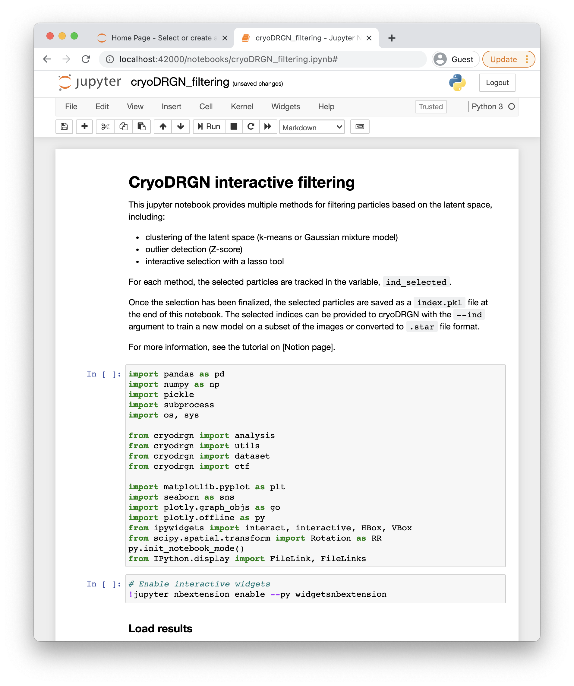
6.2) Run the jupyter-notebook for particle filtering
The jupyter notebook has template code for performing all the analysis and plotting and should require minimal intervention. For a general overview of running jupyter notebooks, see their documentation here: https://jupyter.readthedocs.io/en/latest/running.html.
The cryoDRGN_filtering.ipynb jupyter notebook has three methods for filtering particles:
clustering of the latent embeddings (k-means or Gaussian mixture model)
outlier detection (Z-score)
interactive selection with a lasso tool
For each method, the selected particles are tracked in the variable, ind_selected.
Once the selection has been finalized, the selected particles are saved into the cryoDRGN workdir as a index.pkl file at the end of the notebook. The selected indices can then be provided to cryoDRGN with the --ind argument to train a new model on a subset of the images or converted to .star file format.
For this tutorial, we will use the first method (GMM clustering) to follow the methodology used in Zhong et al. (See Extended Data Fig. 5). However, we will also demo the other methods, which you are welcome to explore.
To get started, first make sure the epoch number in the third cell is set to the correct epoch that we are analyzing. Since we have trained for 50 epochs, it should be set to 49 (0-based indexing).

Set the variable EPOCH = N to the appropriate value.
Then run the cells of the notebook to load the relevant results until the first “Filtering by Cluster” section.
Published filtering results
This section shows the tutorial results colored by the filtered particles in the original publication of the dataset (Davis et al) and in the cryoDRGN paper (Zhong et al). For prospective analysis, the “junk” is usually identified by visualizing the reconstructed volumes and/or the particles images, and especially straightforward for edge/ice artifacts. The filtering may be validated by 2D classification or other traditional tools. In this dataset, the junk particles also have a very different pose distribution (not shown, but you can view this in the interactive visualization section of the jupyter notebook).
Davis et al 3D classification labels
(Optional) Add these code blocks in the jupyter notebook if you wish to generate these visualizations.
# deposited to https://zenodo.org/record/4355284
pub_classification_labels = utils.load_pkl('/path/to/published_labels_major.pkl')
analysis.plot_by_cluster(pc[:,0], pc[:,1], 6, pub_classification_labels)
plt.xlabel('PC1')
plt.ylabel('PC2')
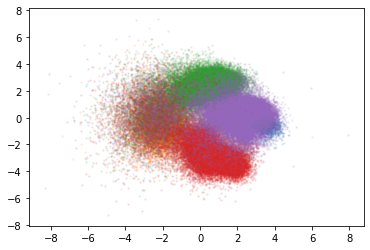
analysis.plot_by_cluster(umap[:,0], umap[:,1], 6, pub_classification_labels)
plt.xlabel('UMAP1')
plt.ylabel('UMAP2')

Zhong et al. filtering results: 96,532 kept particles and 35,367 removed particles
# obtained from https://github.com/zhonge/cryodrgn_empiar/blob/main/empiar10076/inputs/filtered.ind.pkl
pub_filtering = utils.load_pkl('/path/to/filtered_ind.pkl')
plt.scatter(pc[:,0], pc[:,1], alpha=.1, ms=1)
plt.scatter(pc[pub_filtering,0], pc[ind_filtering,1], alpha=.1, ms=1)
plt.xlabel('PC1')
plt.ylabel('PC2')

Kept particles are shown in orange
plt.scatter(pc[:,0], pc[:,1], alpha=.1, ms=1)
plt.scatter(pc[pub_filtering,0], pc[ind_filtering,1], alpha=.1, ms=1)
plt.xlabel('UMAP')
plt.ylabel('UMAP2')
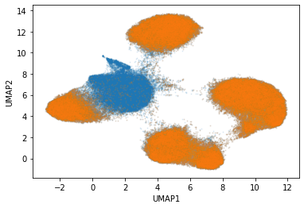
Kept particles are shown in orange
In the next section, we will show the steps to remove the center cluster in the UMAP corresponding to the junk particles (the brown cluster in the 3D classification labels).
6.3) Filtering by GMM cluster label
In this section, we demo the steps and outputs for filtering out the junk cluster using a Gaussian mixture model (GMM) clustering algorithm.
The “Filtering by cluster” section of the Jupyter notebook has two subsections — filtering by kmeans clustering and by GMM clustering. You can try both options and play around with the cluster # and the random seed.
In the GMM-clustering section, change the cluster number (G=6 here) and rerun as necessary to get the desired clustering. Because GMM is a non-deterministic algorithm, the results are sensitive to the initial random seed. You can rerun the cells to try a different random seed.
Note that the clustering is performed on the latent embedding (z) and not on the umap embeddings (umap). This can be experimented with as well.


The resulting 6 clusters:


Set clusters 2 and 5 (green and brown) as the bad/junk clusters. The code block will then identify the particles corresponding to those clusters.

Select particles from clusters 2 and 5.


Alternative method: Filtering by z-score
In practice, we often find that junk particles are located as outliers in the distribution of latent embeddings. This section selects outlier particles by the magnitude of the embedding.

In cell 59, you can change the zscore to make the cutoff more or less stringent.
These plots will be automatically generated that help visualize which particles are selected


Alternative method: Filtering with an interactive lasso tool
Sometimes, the best clustering algorithm is the human eye (e.g. kmeans/GMM clustering algorithms can fail especially for small/oddly-shaped clusters). The cryoDRGN_filtering.ipynb notebook also provides an interactive widget that lets you interactively select regions of the latent space using a lasso tool.
When the widget first shows up, you will need to change the x-axis and y-axis labels to plot the particles by their UMAP embeddings. You can also change the plotting colors.
Note: Sometimes the tool struggles when there are >500k particles. This is a known issue.
Note: There have been installation issues with jupyter widgets on some linux systems. See [link to github].
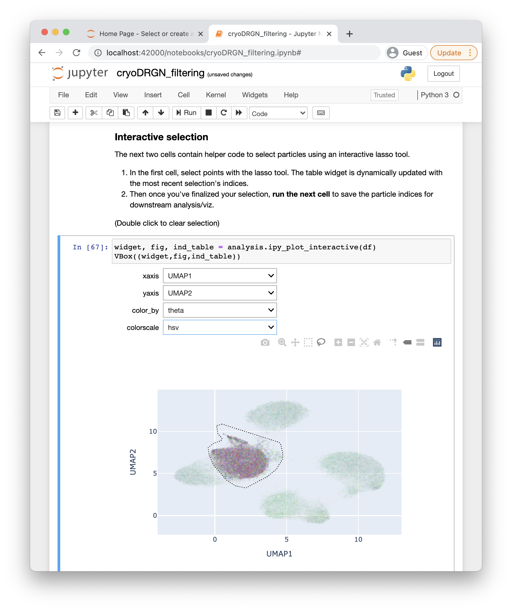


View the raw particles
The second to last section of the jupyter notebook contains code blocks for viewing the raw particle images. This section will visualize 9 images at random from the selected particles. This is sometimes useful for verifying that the selected particles are problematic in obvious cases of junk particles.
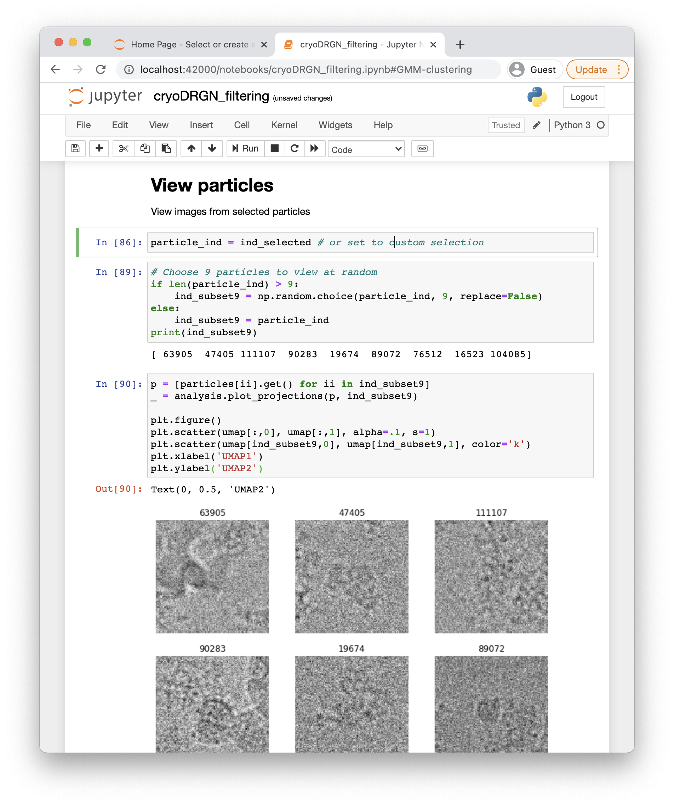
Cell 89 can be rerun to view a different selection of particles.

9 randomly selected particles from ind_selected

Location of the particles in latent space
Saving the selection
The last section of the notebook has cells that will help save the selected indices to use in downstream processing.

Screenshot of the section
In the filtering sections, the selected particles are tracked in the variable ind_selected and ind_selected_not. Because we selected the bad particles, we will now switch what the ind_keep and ind_bad variables are set to in the first cell. This is purely for organizational/file naming purposes.
 Screenshot of the final section in cryoDRGN_filtering.ipynb
Screenshot of the final section in cryoDRGN_filtering.ipynb
Visualization of our kept particles, ind_keep:

Viewing the kept particles (orange) in PCA space

Viewing the kept particles (orange) in UMAP space
The last three cells will print out a summary of the selection and where the indices were saved:
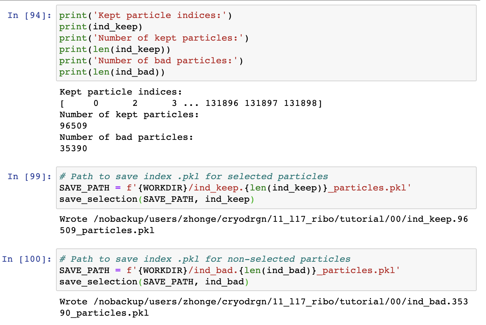
After running these cells, there should be two files saved in the workdir of the cryodrgn job (the number of particles should be similar but most likely not identical):
ind_keep.96509_particles.pklind_bad.35390_particles.pkl
These .pkl files contain a numpy array of indices into the particle stack, which can be provided to cryodrgn train_vae with the --ind flag to restrict training on the subset of the desired particle. This avoids having to extract a new particle stack.
(Additional Functionality) Writing a new .star file
The selected particles can be converted to a .star file using
cryodrgn_utils write_star. See Section 8.3 for more details on this script.
(Additional Functionality) Extracting a new particle stack
A new particle stack can be extracted using the script
filter_mrcs.pyfound in theutilssubdirectory of the cryodrgn repository.
7) CryoDRGN high-resolution training
Now that we have identified the junk particles, we will rerun cryodrgn train_vae on larger, higher resolution images (D=256) using a larger neural network model (1024 dim x 3 layer architecture).
Example command to run on 1 GPU
$ cryodrgn train_vae data/256/particles.256.txt \
--ctf data/ctf.pkl \
--poses data/poses.pkl \
--zdim 8 \
-n 50 \
--uninvert-data \ # needed for this dataset
--enc-dim 1024 --enc-layers 3 \ # set the encoder architecture
--dec-dim 1024 --dec-layers 3 \ # set the decoder architecture
--ind tutorial/00/ind_keep.96509_particles.pkl
-o tutorial/01_vae256 > tutorial_01.log
By providing the --ind argument, cryoDRGN will filter the list of particles, ctf parameters, and poses by the provided index array.
This is the most compute-intensive step of the tutorial. The training will take ~25 min/epoch on a single V100 GPU, requiring ~21 hours total for 50 epochs.
Accelerated training with GPU parallelization
Use cryoDRGN’s --multigpu flag to enable parallelized training across all detected GPUs on the machine. To select specific GPUs for cryoDRGN to run on, use the environmental variable CUDA_VISIBLE_DEVICES, e.g.:
$ cryodrgn train_vae ... # Run on GPU 0
$ cryodrgn train_vae ... --multigpu # Run on all GPUs on the machine
$ CUDA_VISIBLE_DEVICES=0,3 cryodrgn train_vae ... --multigpu # Run on GPU 0,3
When training is parallelized across multiple GPUs, the batch size (number of images trained in each mini-batch of SGD; default -b 8) will be automatically scaled by the number of available GPUs to better take advantage of parallelization. Depending on your compute resources, GPU utilization may be improved with -b 16 (i.e. to achieve linear scaling of runtime with # GPUs). However, note that GPU parallelization, while leading to a faster wall-clock time per epoch, may require increasing the total number of epochs, since the training dynamics are affected (fewer model updates per epoch with larger -b).
Accelerated training with mixed-precision mode
Mixed precision training is available for Nvidia GPUs with tensor core architectures and can lead to order of magnitude speedups in training. As of cryoDRGN version 1.1, mixed precision training is now automatically enabled (and can be turned off with the --no-amp flag).
Note: We recommend using --multigpu and --amp for larger architectures (1024x3) or larger images (D=256). For smaller models/images, GPU computation may not be the training bottleneck. In this case, GPU parallelization and mixed-precision training may have a limited effect on the wall clock training time, while taking up additional compute resources.
8) Analysis
We will first walk through the default outputs from cryodrgn analyze (Section 8.1), then we will use the cryoDRGN jupyter notebook to visualize and generate assembly state density maps (Section 8.2), extract the particles for newly identified state C4 (Section 8.3), and use cryoDRGN’s graph traversal algorithm to generate trajectories of a ribosome assembly pathways (Section 8.4).
8.1) cryodrgn analyze
Similar to Step 5 above, we first run the default analysis pipeline with cryodrgn analyze :
$ cryodrgn analyze -h(cryodrgn) $ cryodrgn analyze -h usage: cryodrgn analyze [-h] [--device DEVICE] [-o OUTDIR] [--skip-vol] [--skip-umap] [--Apix APIX] [--flip] [-d DOWNSAMPLE] [--pc PC] [--ksample KSAMPLE] workdir epoch Visualize latent space and generate volumes positional arguments: workdir Directory with cryoDRGN results epoch Epoch number N to analyze (0-based indexing, corresponding to z.N.pkl, weights.N.pkl) optional arguments: -h, --help show this help message and exit --device DEVICE Optionally specify CUDA device -o OUTDIR, --outdir OUTDIR Output directory for analysis results (default: [workdir]/analyze.[epoch]) --skip-vol Skip generation of volumes --skip-umap Skip running UMAP Extra arguments for volume generation: --Apix APIX Pixel size to add to .mrc header (default: 1 A/pix) --flip Flip handedness of output volume -d DOWNSAMPLE, --downsample DOWNSAMPLE Downsample volumes to this box size (pixels) --pc PC Number of principal component traversals to generate (default: 2) --ksample KSAMPLE Number of kmeans samples to generate (default: 20) --vol-start-index VOL_START_INDEX Default value of start index for volume generation (default: 0)
Example command: (1 GPU, ~10 min)
# Usage: cryodrgn analyze [workdir] [epoch]
$ cryodrgn analyze tutorial/01_vae256 49 --Apix 1.6375 --flip
We flip the handedness of the output volumes with the flag --flip and set the pixel size in the mrc header with --Apix:
Output log
2021-02-28 14:24:49 Saving results to /nobackup/users/zhonge/cryodrgn/11_l17_ribo/04_vae256_gpu/3_gpu1_b8/analyze.49 2021-02-28 14:24:49 Perfoming principal component analysis... 2021-02-28 14:24:49 Explained variance ratio: 2021-02-28 14:24:49 [0.21076616 0.1977381 0.11697037 0.09955638 0.0985605 0.09767462 0.09139399 0.08733987] 2021-02-28 14:24:49 Generating volumes... 2021-02-28 14:24:49 Running command: cryodrgn eval_vol /nobackup/users/zhonge/cryodrgn/11_l17_ribo/04_vae256_gpu/3_gpu1_b8/weights.49.pkl --config /nobackup/users/zhonge/cryodrgn/11_l17_ribo/04_vae256_gpu/3_gpu1_b8/config.yaml --zfile /nobackup/users/zhonge/cryodrgn/11_l17_ribo/04_vae256_gpu/3_gpu1_b8/analyze.49/pc1/z_values.txt -o /nobackup/users/zhonge/cryodrgn/11_l17_ribo/04_vae256_gpu/3_gpu1_b8/analyze.49/pc1 --Apix 1 2021-02-28 14:24:50 Use cuda True 2021-02-28 14:24:50 Namespace(Apix=1.0, D=None, activation='relu', config='/nobackup/users/zhonge/cryodrgn/11_l17_ribo/04_vae256_gpu/3_gpu1_b8/config.yaml', domain=None, downsample=None, enc_mask=None, encode_mode=None, flip=False, func=<function main at 0x2000ac580e18>, l_extent=None, n=10, norm=None, o='/nobackup/users/zhonge/cryodrgn/11_l17_ribo/04_vae256_gpu/3_gpu1_b8/analyze.49/pc1', pdim=None, pe_dim=None, pe_type=None, players=None, prefix='vol_', qdim=None, qlayers=None, verbose=False, weights='/nobackup/users/zhonge/cryodrgn/11_l17_ribo/04_vae256_gpu/3_gpu1_b8/weights.49.pkl', z=None, z_end=None, z_start=None, zdim=None, zfile='/nobackup/users/zhonge/cryodrgn/11_l17_ribo/04_vae256_gpu/3_gpu1_b8/analyze.49/pc1/z_values.txt') 2021-02-28 14:24:50 Loaded configuration: {'dataset_args': {'ctf': '/nobackup/users/zhonge/cryodrgn/11_l17_ribo/data/ctf.new.pkl', 'datadir': None, 'do_pose_sgd': False, 'ind': '/nobackup/users/zhonge/cryodrgn/11_l17_ribo/aux/ind2.train.pkl', 'invert_data': False, 'keepreal': False, 'norm': [0, 325.65057], 'particles': '/nobackup/users/zhonge/cryodrgn/11_l17_ribo/data/256/projections.txt', 'poses': '/nobackup/users/zhonge/cryodrgn/11_l17_ribo/data/pose.pkl', 'window': False}, 'lattice_args': {'D': 257, 'extent': 0.5, 'ignore_DC': True}, 'model_args': {'activation': 'relu', 'domain': 'fourier', 'enc_mask': 128, 'encode_mode': 'resid', 'pdim': 1024, 'pe_dim': None, 'pe_type': 'geom_lowf', 'players': 3, 'qdim': 1024, 'qlayers': 3, 'zdim': 8}, 'seed': 21152} 2021-02-28 14:24:56 Using circular lattice with radius 128 2021-02-28 14:24:56 Generating 10 volumes 2021-02-28 14:24:56 [-0.13908401 -0.66560406 0.95547887 -0.6795193 2.33642701 2.05639807 -1.21175412 -2.10233111] 2021-02-28 14:25:06 [-0.13527223 -0.48584066 0.75453086 -0.51289588 1.81356009 1.58481893 -0.9511668 -1.6463648 ] 2021-02-28 14:25:15 [-0.13146044 -0.30607727 0.55358285 -0.34627247 1.29069317 1.11323979 -0.69057947 -1.19039849] 2021-02-28 14:25:23 [-0.12764866 -0.12631387 0.35263484 -0.17964905 0.76782624 0.64166065 -0.42999215 -0.73443218] 2021-02-28 14:25:32 [-0.12383687 0.05344952 0.15168683 -0.01302564 0.24495932 0.1700815 -0.16940482 -0.27846588] 2021-02-28 14:25:41 [-0.12002508 0.23321291 -0.04926117 0.15359777 -0.2779076 -0.30149764 0.09118251 0.17750043] 2021-02-28 14:25:49 [-0.1162133 0.41297631 -0.25020918 0.32022119 -0.80077453 -0.77307678 0.35176983 0.63346674] 2021-02-28 14:25:58 [-0.11240151 0.5927397 -0.45115719 0.4868446 -1.32364145 -1.24465592 0.61235716 1.08943305] 2021-02-28 14:26:07 [-0.10858973 0.7725031 -0.6521052 0.65346802 -1.84650837 -1.71623506 0.87294448 1.54539936] 2021-02-28 14:26:15 [-0.10477794 0.95226649 -0.85305321 0.82009143 -2.3693753 -2.1878142 1.13353181 2.00136567] 2021-02-28 14:26:24 Finsihed in 0:01:33.787293 2021-02-28 14:26:25 Running command: cryodrgn eval_vol /nobackup/users/zhonge/cryodrgn/11_l17_ribo/04_vae256_gpu/3_gpu1_b8/weights.49.pkl --config /nobackup/users/zhonge/cryodrgn/11_l17_ribo/04_vae256_gpu/3_gpu1_b8/config.yaml --zfile /nobackup/users/zhonge/cryodrgn/11_l17_ribo/04_vae256_gpu/3_gpu1_b8/analyze.49/pc2/z_values.txt -o /nobackup/users/zhonge/cryodrgn/11_l17_ribo/04_vae256_gpu/3_gpu1_b8/analyze.49/pc2 --Apix 1 2021-02-28 14:26:27 Use cuda True 2021-02-28 14:26:27 Namespace(Apix=1.0, D=None, activation='relu', config='/nobackup/users/zhonge/cryodrgn/11_l17_ribo/04_vae256_gpu/3_gpu1_b8/config.yaml', domain=None, downsample=None, enc_mask=None, encode_mode=None, flip=False, func=<function main at 0x2000ac580e18>, l_extent=None, n=10, norm=None, o='/nobackup/users/zhonge/cryodrgn/11_l17_ribo/04_vae256_gpu/3_gpu1_b8/analyze.49/pc2', pdim=None, pe_dim=None, pe_type=None, players=None, prefix='vol_', qdim=None, qlayers=None, verbose=False, weights='/nobackup/users/zhonge/cryodrgn/11_l17_ribo/04_vae256_gpu/3_gpu1_b8/weights.49.pkl', z=None, z_end=None, z_start=None, zdim=None, zfile='/nobackup/users/zhonge/cryodrgn/11_l17_ribo/04_vae256_gpu/3_gpu1_b8/analyze.49/pc2/z_values.txt') 2021-02-28 14:26:27 Loaded configuration: {'dataset_args': {'ctf': '/nobackup/users/zhonge/cryodrgn/11_l17_ribo/data/ctf.new.pkl', 'datadir': None, 'do_pose_sgd': False, 'ind': '/nobackup/users/zhonge/cryodrgn/11_l17_ribo/aux/ind2.train.pkl', 'invert_data': False, 'keepreal': False, 'norm': [0, 325.65057], 'particles': '/nobackup/users/zhonge/cryodrgn/11_l17_ribo/data/256/projections.txt', 'poses': '/nobackup/users/zhonge/cryodrgn/11_l17_ribo/data/pose.pkl', 'window': False}, 'lattice_args': {'D': 257, 'extent': 0.5, 'ignore_DC': True}, 'model_args': {'activation': 'relu', 'domain': 'fourier', 'enc_mask': 128, 'encode_mode': 'resid', 'pdim': 1024, 'pe_dim': None, 'pe_type': 'geom_lowf', 'players': 3, 'qdim': 1024, 'qlayers': 3, 'zdim': 8}, 'seed': 21152} 2021-02-28 14:26:28 Using circular lattice with radius 128 2021-02-28 14:26:29 Generating 10 volumes 2021-02-28 14:26:29 [-0.23653386 -2.73221812 0.08971123 0.73753149 -1.50277524 -0.29134391 0.51194909 -1.28563224] 2021-02-28 14:26:38 [-0.20853919 -2.02861518 0.07751347 0.57718157 -1.1477155 -0.24292948 0.38124093 -0.97811094] 2021-02-28 14:26:46 [-0.18054453 -1.32501224 0.06531572 0.41683164 -0.79265575 -0.19451505 0.25053277 -0.67058963] 2021-02-28 14:26:55 [-0.15254986 -0.6214093 0.05311796 0.25648172 -0.43759601 -0.14610062 0.11982461 -0.36306833] 2021-02-28 14:27:04 [-0.12455519 0.08219364 0.0409202 0.09613179 -0.08253627 -0.09768618 -0.01088355 -0.05554702] 2021-02-28 14:27:12 [-0.09656052 0.78579658 0.02872244 -0.06421813 0.27252347 -0.04927175 -0.14159171 0.25197428] 2021-02-28 14:27:21 [-6.85658553e-02 1.48939952e+00 1.65246763e-02 -2.24568055e-01 6.27583215e-01 -8.57319322e-04 -2.72299871e-01 5.59495585e-01] 2021-02-28 14:27:30 [-0.04057119 2.19300245 0.00432692 -0.38491798 0.98264296 0.04755711 -0.40300803 0.86701689] 2021-02-28 14:27:38 [-0.01257652 2.89660539 -0.00787084 -0.5452679 1.3377027 0.09597154 -0.53371619 1.17453819] 2021-02-28 14:27:47 [ 0.01541815 3.60020833 -0.0200686 -0.70561783 1.69276244 0.14438598 -0.66442435 1.4820595 ] 2021-02-28 14:27:56 Finsihed in 0:01:29.431088 2021-02-28 14:27:56 K-means clustering... 2021-02-28 14:28:01 Generating volumes... 2021-02-28 14:28:01 Running command: cryodrgn eval_vol /nobackup/users/zhonge/cryodrgn/11_l17_ribo/04_vae256_gpu/3_gpu1_b8/weights.49.pkl --config /nobackup/users/zhonge/cryodrgn/11_l17_ribo/04_vae256_gpu/3_gpu1_b8/config.yaml --zfile /nobackup/users/zhonge/cryodrgn/11_l17_ribo/04_vae256_gpu/3_gpu1_b8/analyze.49/kmeans20/z_values.txt -o /nobackup/users/zhonge/cryodrgn/11_l17_ribo/04_vae256_gpu/3_gpu1_b8/analyze.49/kmeans20 --Apix 1 2021-02-28 14:28:03 Use cuda True 2021-02-28 14:28:03 Namespace(Apix=1.0, D=None, activation='relu', config='/nobackup/users/zhonge/cryodrgn/11_l17_ribo/04_vae256_gpu/3_gpu1_b8/config.yaml', domain=None, downsample=None, enc_mask=None, encode_mode=None, flip=False, func=<function main at 0x2000ac580e18>, l_extent=None, n=10, norm=None, o='/nobackup/users/zhonge/cryodrgn/11_l17_ribo/04_vae256_gpu/3_gpu1_b8/analyze.49/kmeans20', pdim=None, pe_dim=None, pe_type=None, players=None, prefix='vol_', qdim=None, qlayers=None, verbose=False, weights='/nobackup/users/zhonge/cryodrgn/11_l17_ribo/04_vae256_gpu/3_gpu1_b8/weights.49.pkl', z=None, z_end=None, z_start=None, zdim=None, zfile='/nobackup/users/zhonge/cryodrgn/11_l17_ribo/04_vae256_gpu/3_gpu1_b8/analyze.49/kmeans20/z_values.txt') 2021-02-28 14:28:03 Loaded configuration: {'dataset_args': {'ctf': '/nobackup/users/zhonge/cryodrgn/11_l17_ribo/data/ctf.new.pkl', 'datadir': None, 'do_pose_sgd': False, 'ind': '/nobackup/users/zhonge/cryodrgn/11_l17_ribo/aux/ind2.train.pkl', 'invert_data': False, 'keepreal': False, 'norm': [0, 325.65057], 'particles': '/nobackup/users/zhonge/cryodrgn/11_l17_ribo/data/256/projections.txt', 'poses': '/nobackup/users/zhonge/cryodrgn/11_l17_ribo/data/pose.pkl', 'window': False}, 'lattice_args': {'D': 257, 'extent': 0.5, 'ignore_DC': True}, 'model_args': {'activation': 'relu', 'domain': 'fourier', 'enc_mask': 128, 'encode_mode': 'resid', 'pdim': 1024, 'pe_dim': None, 'pe_type': 'geom_lowf', 'players': 3, 'qdim': 1024, 'qlayers': 3, 'zdim': 8}, 'seed': 21152} 2021-02-28 14:28:04 Using circular lattice with radius 128 2021-02-28 14:28:05 Generating 20 volumes 2021-02-28 14:28:05 [-1.45019531 -1.14550781 0.06768799 -0.26074219 -1.40332031 0.63574219 -0.65576172 -3.86523438] 2021-02-28 14:28:14 [ 0.71191406 -1.34570312 -1.46777344 2.5078125 0.31176758 -0.37353516 -1.26367188 -0.44970703] 2021-02-28 14:28:22 [ 0.0526123 -3.54492188 -0.11004639 -1.203125 1.15429688 0.99072266 -1.21777344 -1.796875 ] 2021-02-28 14:28:31 [ 0.37890625 -1.99902344 1.69921875 0.80175781 -0.14501953 1.3984375 -0.59619141 -0.50732422] 2021-02-28 14:28:40 [ 1.34179688 -0.81445312 1.42382812 0.95751953 1.82324219 -0.29614258 0.68896484 -1.44140625] 2021-02-28 14:28:49 [-2.7734375 0.28222656 0.20996094 1.68554688 -0.72167969 -1.94433594 -1.87402344 0.43188477] 2021-02-28 14:28:57 [ 2.0234375 0.16711426 0.40917969 1.89941406 -1.24902344 -3.1953125 0.54736328 0.80371094] 2021-02-28 14:29:06 [ 1.54495239e-03 -2.34179688e+00 -8.84765625e-01 -1.37207031e+00 -2.89648438e+00 -7.03125000e-01 -3.58642578e-01 4.86145020e-02] 2021-02-28 14:29:15 [ 0.56298828 -1.85449219 -1.29003906 1.12011719 -2.30859375 -1.21777344 1.09960938 1.78027344] 2021-02-28 14:29:23 [-1.92382812 -2.53125 0.17822266 1.21386719 0.18640137 0.56542969 1.14648438 0.16760254] 2021-02-28 14:29:32 [-0.76513672 -0.51318359 0.98779297 1.11328125 -2.30078125 -0.34350586 2.07226562 -0.29492188] 2021-02-28 14:29:41 [ 0.08319092 2.77148438 -1.41992188 0.32055664 -1.33886719 0.69873047 0.36987305 3.66601562] 2021-02-28 14:29:49 [-1.55566406 2.93359375 0.62402344 -1.88378906 -0.35253906 -0.8515625 1.06835938 2.41015625] 2021-02-28 14:29:58 [ 0.25854492 2.3125 -0.97119141 -1.78320312 0.2220459 -3.63476562 0.96826172 2.15625 ] 2021-02-28 14:30:07 [ 0.64306641 2.70117188 -0.85791016 -0.04754639 2.31054688 3.125 -1.95703125 0.05780029] 2021-02-28 14:30:15 [-0.3605957 0.45092773 1.70800781 -2.24804688 3.0390625 1.54492188 -0.83007812 -0.16125488] 2021-02-28 14:30:24 [ 1.39355469 2.33789062 2.18164062 -0.00338936 2.87109375 0.89550781 -0.84960938 0.14160156] 2021-02-28 14:30:33 [ 0.47851562 2.55273438 -0.328125 -0.96533203 -0.6796875 1.35449219 1.08007812 -1.60253906] 2021-02-28 14:30:41 [-0.38061523 1.22949219 -1.48046875 -0.50439453 2.12890625 -0.9296875 -0.40283203 0.62597656] 2021-02-28 14:30:50 [-2.12695312 2.45507812 0.38671875 1.51757812 0.96386719 1.17089844 1.08300781 0.84228516] 2021-02-28 14:30:59 Finsihed in 0:02:56.162816 2021-02-28 14:30:59 Running UMAP... 2021-02-28 14:33:00 Generating plots... 2021-02-28 14:33:13 /nobackup/users/zhonge/cryodrgn/11_l17_ribo/04_vae256_gpu/3_gpu1_b8/analyze.49/cryoDRGN_viz.ipynb already exists. Skipping 2021-02-28 14:33:13 /nobackup/users/zhonge/cryodrgn/11_l17_ribo/04_vae256_gpu/3_gpu1_b8/analyze.49/cryoDRGN_viz.ipynb 2021-02-28 14:33:13 Creating jupyter notebook... 2021-02-28 14:33:14 /nobackup/users/zhonge/cryodrgn/11_l17_ribo/04_vae256_gpu/3_gpu1_b8/analyze.49/cryoDRGN_filtering.ipynb 2021-02-28 14:33:14 Finished in 0:08:25.218678
As before, this will create a new directory analyze.49 in the workdir of the cryodrgn job containing UMAP/PCA visualizations of the latent space, 20 sampled density maps at kmeans cluster centers, 10 density maps along PC1 and PC2, and jupyter notebooks for interactive analysis.
Additional usage notes:
The output volumes will be 256^3. To generate downsampled volumes (e.g. to take up less disk space), use the argument
-d.More volumes can be generated with
--ksample NMore PCs (up to the dimension of the latent variable) can be generated with
--pc NThe pixel size and handedness of a
.mrcfile can also be modified later with the scriptsadd_psize.pyandflip_hand.pyin theutilssubdirectory of the cryodrgn repository.The argument
--vol-start-index(default0) dictates the starting index of.mrcfilenames for generated volumes (vol_nnn.mrc). You may want to set this to1if, for example you are usingChimeraXto visualize these maps, which by convention numbers all maps that it opens from1.
Visualization of the latent space
Because we trained an 8-dimensional latent variable model (—-zdim 8), PCA (a linear dimensionality reduction technique) and UMAP (a nonlinear dimensionality technique) are used to visualize the distribution of particle latent embeddings.
PCA scatter plot (left) and density plot (right)

z_pca.png

z_pca_hexbin.png
UMAP scatter plot (left) and density plot (right)

umap.png

umap_hexbin.png
The layout of the latent space reproduces the original results shown in Fig 5F of Zhong et al up to the trivial inversion of UMAP2 axis.
Default sampled density maps
cryodrgn analyze uses the k-means clustering algorithm to partition the latent space into regions (by default k=20 regions), and generate a density map from the center of each of these regions. The goal is to provide a tractable number of representative density maps to visually inspect.
Additional usage notes:
The number of partitions can be updated with the argument --ksample 50 to change the number of density maps to e.g. 50.
# contents of the directory
(cryodrgn) $ ls tutorial/01_vae256/analyze.49/kmeans20/
centers_ind.txt umap.png vol_003.mrc vol_007.mrc vol_011.mrc vol_015.mrc vol_019.mrc
centers.txt vol_000.mrc vol_004.mrc vol_008.mrc vol_012.mrc vol_016.mrc z_pca_hex.png
labels.pkl vol_001.mrc vol_005.mrc vol_009.mrc vol_013.mrc vol_017.mrc z_pca.png
umap_hex.png vol_002.mrc vol_006.mrc vol_010.mrc vol_014.mrc vol_018.mrc z_values.txt
 Location of the twenty volumes in the UMAP visualization
Location of the twenty volumes in the UMAP visualization
PC trajectories
There are two subdirectories in the analysis directory that will contain volumes generated along the first and second principal components (PC) of the latent space. By default, the volumes are generated at equally spaced points between the first and 99th percentile of the distribution projected onto each principal component (e.g. Fig 6c of Zhong et al).
Note 1: The PC trajectories can give a sense of the variability in the structure, however, the principal components of cryoDRGN’s latent space are not principal components of the volumes due to the nonlinear nature of the decoder.
Note 2: Principal component trajectories can also produce nonphysical “motions”, e.g. if there is discrete variability in the structure.
Additional usage notes:
Use
--pcto change the number of PCs that are generated bycryodrgn analyzeFor more flexibility in usage, see
cryodrgn pc_traversal
(cryodrgn) $ ls tutorial/01_vae256/analyze.49/pc1/
umap.png vol_001.mrc vol_003.mrc vol_005.mrc vol_007.mrc vol_009.mrc
vol_000.mrc vol_002.mrc vol_004.mrc vol_006.mrc vol_008.mrc z_values.txt
(cryodrgn) $ ls tutorial/01_vae256/analyze.49/pc2/
umap.png vol_001.mrc vol_003.mrc vol_005.mrc vol_007.mrc vol_009.mrc
vol_000.mrc vol_002.mrc vol_004.mrc vol_006.mrc vol_008.mrc z_values.txt
PC1 volumes
PC1: vol_000.mrc to vol_009.mrc; This shows one of the assembly pathways from Davis et al where the central protuberance is built before the rest of the complex.
 UMAP embeddings colored by PC1 value (pc1/umap.png)
UMAP embeddings colored by PC1 value (pc1/umap.png)
PC2 volumes
PC2: vol_000.mrc to vol_009.mrc; This shows another assembly pathway from Davis et al where the base is built before the rest of the complex.

UMAP embeddings colored by PC2 value
The umap.png plots within the pcX subdirectories show the UMAP embedding colored by each particle’s projected value along PCX. This helps give a sense of the layout of the latent space and how the UMAP embedding (a nonlinear 8D → 2D embedding) is related to the PCA projection (a linear projection from 8D → 2D).
8.2) The cryoDRGN jupyter notebook
CryoDRGN provides a jupyter notebook, cryoDRGN_viz.ipynb, which contains more visualization tools to facilitate interactive exploration of the trained model.
Starting the jupyter notebook
See Section 6.1.
Running the jupyter notebook
Make sure the epoch number specified in the third cell is set to the correct epoch that we are analyzing. Since we have trained for 50 epochs, it should be 49 here (0-based indexing).
Then, you can run each cell one by one to see the outputs. Alternatively, you can run the entire notebook in one go with Cell → Run All.
Additional plots in the Jupyter notebook include:
Plot of the learning curve (i.e. average loss per epoch)

Plot of the pose distribution
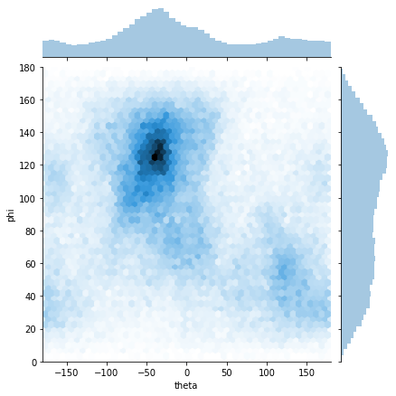

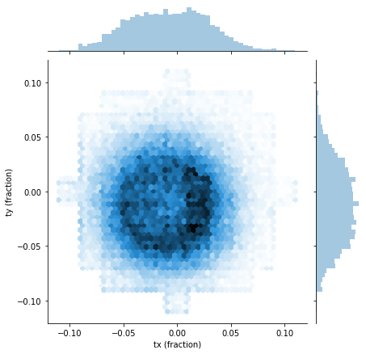
In the “Interactive visualization” section, any per-particle cryoDRGN data are loaded into an interactive widget for visualization.
Advanced usage: Additional data series may be added to the pandas dataframe and will automatically show up in the widget.

Selected the desired x and y axis data series.
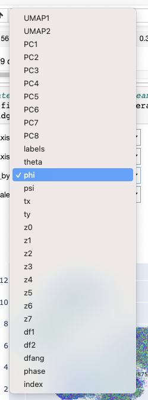
label: kmeans20 labels theta/phi/psi: Euler angles tx/ty: Translations df1/df2/dfang/phase: defocus parameters index: particle ordering
As a debugging tool, it is sometimes useful to visualize the latent space colored by pose or CTF parameters. Regions of the latent space are enriched in particular viewing directions or defocus values may be a sign that the latent variable is modeling these imaging variations instead of structural heterogeneity.


Comparing to 3D classification labels
(Optional) Add these code blocks in the jupyter notebook after the data loading sectio to plot by 3D classification labels for major states and minor assembly states.
# Download from https://zenodo.org/record/4355284
pub_labels = utils.load_pkl('path/to/published_labels.pkl')
pub_labels_major = utils.load_pkl('path/to/published_labels_major.pkl')
# get labels for filtered particles
pub_labels = pub_labels[ind_orig] # ind_orig is loaded in cell 11 of the jupyter notebook
pub_labels_major = pub_labels_major[ind_orig]
Plot major classes
# get cluster centers for major classes
major_centers = []
for i in range(5):
zsub = z[pub_labels_major == i]
major_centers.append(np.mean(zsub,axis=0))
major_centers = np.array(major_centers)
major_centers2, major_centers_i = analysis.get_nearest_point(z,major_centers)
Plot minor classes
# get cluster centers for minor classes
minor_centers = []
for i in range(14):
zsub = z[pub_labels == i]
minor_centers.append(np.mean(zsub,axis=0))
minor_centers = np.array(minor_centers)
minor_centers2, minor_centers_i = analysis.get_nearest_point(z,minor_centers)
analysis.plot_by_cluster(umap[:,0],umap[:,1],5,pub_labels_major,centers_ind=major_centers_i,annotate=True)

colors = ['C0','C1',
'C2','C8','green',
'C3','orangered','maroon','lightcoral',
'C4','slateblue','magenta','blueviolet','plum']
analysis.plot_by_cluster(umap[:,0],umap[:,1],14,pub_labels,centers_ind=minor_centers_i,annotate=True,colors=colors)

Generating additional volumes
To generate the volumes associated with each of these assembly states, we can use the last section of the jupyter notebook:
For the variable
vol_ind, replace the empty list with the indices corresponding to the assembly state cluster centers:

The next cell automatically creates a clean output directory, but you can also define your own, e.g.
outdir = "major_states".Then run the final cell to generate volumes at the values of
zat the indices defined withvol_ind. The volumes will be saved in the specified directory. The cell will also return links to directly download the file into your Downloads folder, which is helpful if accessing the jupyter notebook via ssh.

8.3) Extracting particles for traditional refinement
In Zhong et al, we identified a new assembly state, C4, which was validated with traditional refinement (see Figure 5F). This section shows how to use the interactive lasso tool to select particles from a region of the latent space and save the particles in .star file format.
Interactive selection
Use the interactive lasso tool to select the small cluster of particles near the class C megacluster. The table below the plot will update with the indices of the selected datapoints.


Then, evaluate the next cell to save the selected particles into the variable ind_selected. In this example, 1146 particles were selected.
Note: A representative C4 structure from cryoDRGN can be generated with the Volume Generation section of the notebook. Give it a try!
Evaluate the next few cells to view the selection in PCA and UMAP space:

In the next section of the jupyter notebook, there is template code for saving the index selection. Rename the path as ind_selected_classC4.pkl and evaluate the cells to save the selection as an index .pkl file. We will convert it to a .star file in the next step.

Note: An index selection saved as a .pkl file can also be generated from clustering tools in the cryoDRGN_filtering.ipnyb jupyter notebook. See Section 6.3.
Converting to a .star file
The cryodrgn_utils write_star tool can be used to convert the index .pkl of selected particles (and the input particles .mrcs, and optionally the ctf and/or pose .pkl) to .star file format:
$ cryodrgn_utils write_star -h(cryodrgn) $ cryodrgn_utils write_star -h usage: cryodrgn_utils write_star [-h] [--ctf CTF] [--poses POSES] [--ind IND] [--full-path] -o O particles Create a Relion 3.0 star file from a particle stack and ctf parameters positional arguments: particles Input particles (.mrcs, .txt) optional arguments: -h, --help show this help message and exit --ctf CTF Optionally include ctf information from a .pkl file --poses POSES Optionally include pose information from a .pkl file --ind IND Optionally filter by selected index array (.pkl) --full-path Write the full path to particles (default: relative paths) -o O Output .star file
Note: This command will add ctf/pose information from the corresponding .pkl files, if provided. Any additional fields in the input .star file will be preserved as-is.
Example command:
$ cryodrgn_utils write_star data/128/particles.128.mrcs data/ctf.pkl \
--poses data/poses.pkl
--ind tutorial/01_vae256/ind_selected_classC4.pkl \
--full-path \
-o class_C4.128.star
Re-extracting particles from the micrograph
To re-extract particles from the original micrograph (e.g. at full resolution)
$ cryodrgn_utils write_star data/128/particles.128.mrcs data/ctf.pkl \
--poses data/poses.pkl
--ind tutorial/01_vae256/ind_selected_classC4.pkl \
--full-path \
-o class_C4.128.star
Note to create a filtered
8.4) Generating trajectories
cryodrgn eval_vol can be used to generate additional density maps given a list of z values. (See the Github README for more complete documentation).
In this section, we will use cryoDRGN’s graph traversal algorithm to find paths through latent space (cryodrgn graph_traversal), and then generate volumes along this path (cryodrgn eval_vol).
cryodrgn graph_traversal
$ cryodrgn graph_traversal -h(cryodrgn) $ cryodrgn graph_traversal -h usage: cryodrgn graph_traversal [-h] --anchors ANCHORS [ANCHORS ...] [--max-neighbors MAX_NEIGHBORS] [--avg-neighbors AVG_NEIGHBORS] [--batch-size BATCH_SIZE] [--max-images MAX_IMAGES] -o PATH.TXT --out-z Z.PATH.TXT data Find shortest path along nearest neighbor graph positional arguments: data Input z.pkl embeddings optional arguments: -h, --help show this help message and exit --anchors ANCHORS [ANCHORS ...] Index of anchor points --max-neighbors MAX_NEIGHBORS --avg-neighbors AVG_NEIGHBORS --batch-size BATCH_SIZE --max-images MAX_IMAGES -o PATH.TXT Output .txt file for path indices --out-z Z.PATH.TXT Output .txt file for path z-values
CryoDRGN’s graph traversal algorithm builds a nearest neighbor graph between all the latent embeddings, and then performs dijkstra’s algorithm to find the shortest path on the graph between the anchors nodes. The idea is to find a path between the anchors points in latent space while remaining on the data manifold since we don’t want to generate structures from empty regions of the latent space.
Example usage, where the kmeans cluster centers are used as the anchor points:
$ cd analyze.49 # assuming you've already run cryodrgn analyze
$ cryodrgn graph_traversal ../z.49.pkl --anchors $(cat kmeans20/centers_ind.txt) -o graph_traversal/path.txt --out-z graph_traversal/z.path.txt
Note that you could specify arbitrary data points as the anchor points, e.g. you could manually find the indices of desired data points from the jupyter notebook (in the interactive visualization sections) that you want as the endpoints of the trajectory.
cryodrgn graph_traversal will produce a text file containing a list of z values (z.path.txt). This may be converted to .mrc files with cryodrgn eval_vol, e.g.
$ cd graph_traversal
$ cryodrgn eval_vol ../../weights.49.pkl -c ../../config.yaml --zfile z.path.txt -o .
Generating assembly trajectories
In section 8.2 above, we identified the representative particles corresponding to each minor assembly state:
# Representative indices for minor assembly states, note these indices will vary between different runs
# A, B, C1, C2, C3, D1, D2, D3, D4, E1, E2, E3, E4, E5
>> minor_centers_i
array([47225, 67124, 28314, 77185, 742, 19716, 21262, 13647, 34996,
2660, 61443, 14564, 42638, 57647])
To generate a trajectory for assembly pathway B→D1→D2→D3→D4→E3→E5 in Figure 7 of Davis et al, use the corresponding assembly state indices as the anchor points in cryodrgn graph_traversal:
$ cryodrgn graph_traversal ../z.49.pkl --anchors 67124 19716 21262 13647 34996 14564 57647 -o assembly_path_A/path.txt --out-z assembly_path_A/z.path.txt
This will produce a path.txt file and a z.path.txt file showing the indices of the path and the values of the latent variable along the path. Then use cryodrgn eval_vol to generate volumes from the latent space graph traversal:
$ cd assembly_path_A
$ cryodrgn eval_vol ../../weights.49.pkl -c ../../config.yaml --zfile z.path.txt -o .
CryoDRGN’s graph traversal algorithm through LSU assembly states B→D1→D2→D3→D4→E3→E5